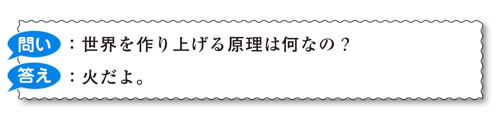
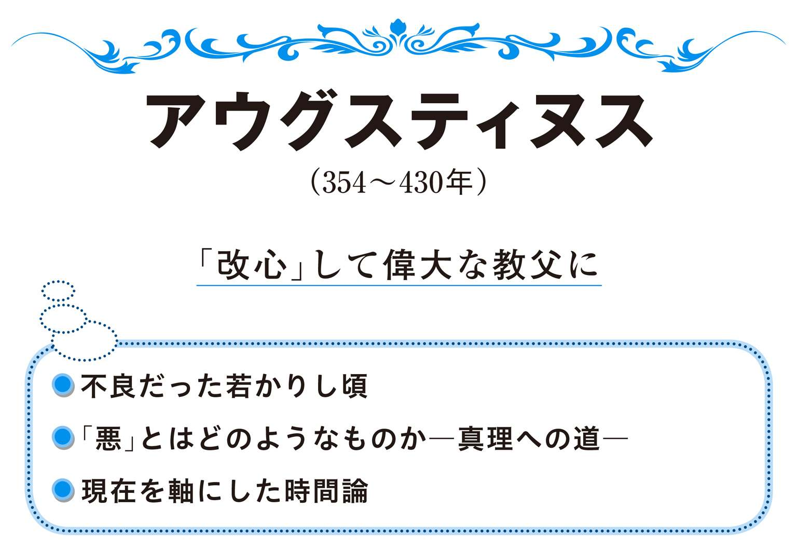
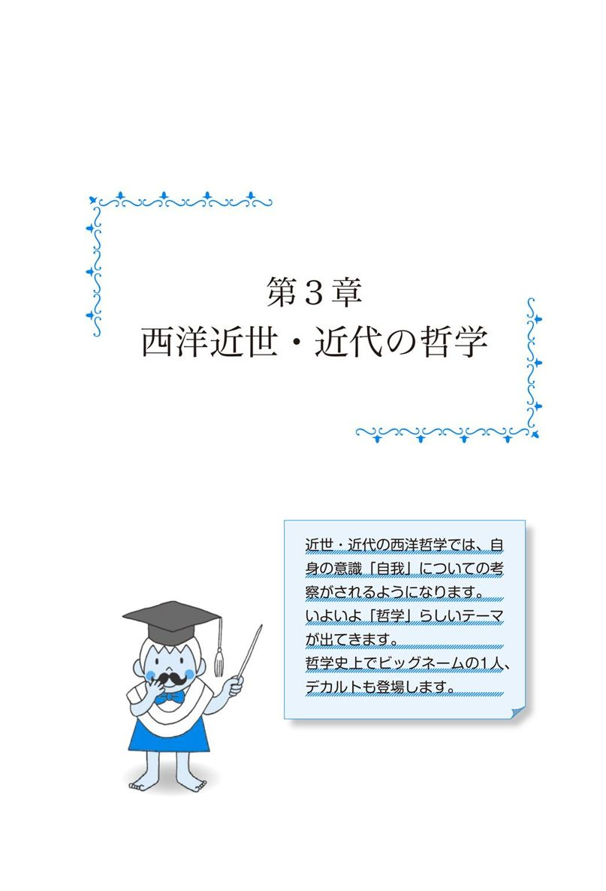
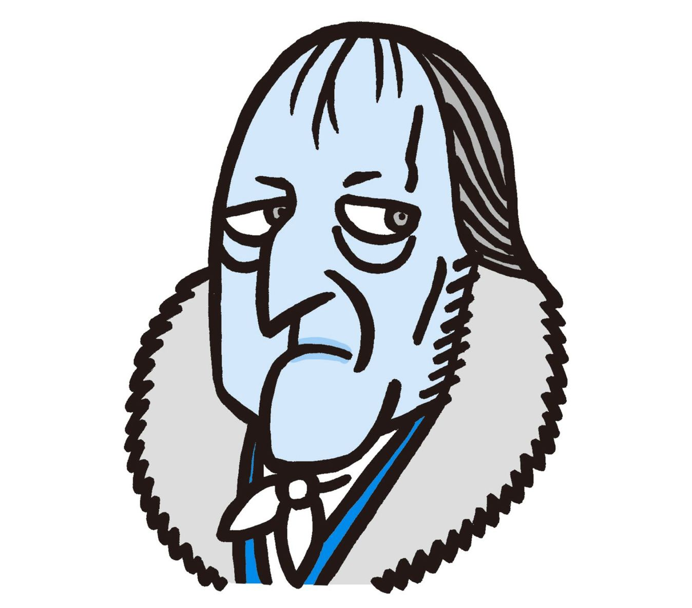
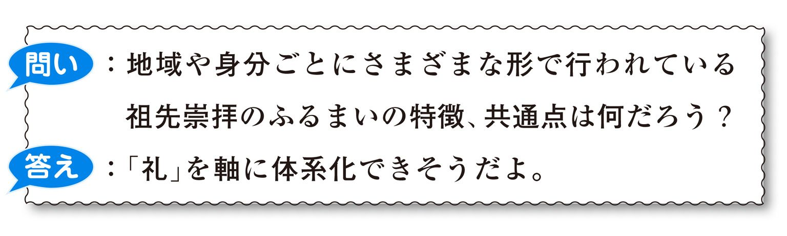
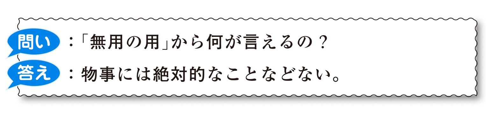

| おとなの楽習 (27) 哲学のおさらい | |
| 﨑井 将之 | |
| (2016) | |
知を愛すること、それが哲学！
「生きるとはどういうことだろう？」「善悪とは何だろう？」「世界とはなんだろう？」といった「素朴で哲学っぽい」問題意識は、小中学生の頃なら誰でも一度はもつものです。学校の国語や道徳の授業でも、こうしたテーマの物語、エッセイが教材として扱われていたはずですから。むかし読んだ国語、道徳の教科書の中に、段落間の関係とか、文法の働きとか、漢字の読み書きとかに関係なく、純粋に心に残る印象的なお話がありませんでしたか。そしてそれは、先に挙げたような「素朴で哲学っぽい」ことを問うていた内容ではなかったでしょうか。
一方、大人になった今ではどうですか。日々の仕事に追われたり、人間関係の気遣いに追われたり、子育てに追われたり、買い物に追われたりで、「素朴で哲学っぽい」ことを考える機会なんてほとんどないのではないでしょうか。ましてや自ら「さあ哲学っぽいことを考えるぞ！」なんて、夢にも思わないのではないでしょうか。そんな日々を送っている大人の皆さん！ 本書を通して、「今では縁遠くなった素朴で哲学っぽい問題意識」を思い出し、「小中学生の頃に体得していた若くみずみずしい感性」を取り戻していただければと思います。
ところで、「哲学っぽい」という言葉を使いましたが、そもそも「哲学」とは何でしょうか。ギリシャの哲学者であるソクラテスは、「人生をよく生きる」とは「知を愛すること」であると言いました。この「知を愛すること」は古代ギリシャ語で「フィロソフィア」といい、このフィロソフィアを明治時代に西周（にしあまね）という人が「哲学」と日本語訳しました。ですから、哲学とは「知を愛すること」である、と考えてよいでしょう。「知」とは、広辞苑第六版によると「しること。物事を理解し、是非・善悪を弁別する（＝見分ける）心の作用」だそうです。
この「知を愛すること」という言葉から、「哲学する」とはどういうことかについて、さらに考えてみましょう。
まず第一に、哲学が愛するのは「知」である、ということがこの言葉で分かります。「神様を信じる」「神話を信じる」「救世主を信じる」の「信」を愛するのではありません。つまり、宗教的な盲信とは一線を画するものであるといえます。
第二に、哲学とは、知を「愛すること」であり、「覚えること」が目的ではないということです。本書が扱っているような哲学の歴史をひたすら暗記する、というのは哲学ではないのです。「この哲学者はなぜこう考えたのか。自分ならどう考えるか」「この点についてこの哲学者はこんなふうに考えたが、私はそうは考えない」......。こんなことを思いながら哲学史の本を読むことが、知を「愛すること」といえるでしょう。
第三に、知を「ありがたがること」でもありません。時として特定の哲学者の言葉や考え方を気に入り、その言葉の一つ一つを崇めたてまつりたくなることもあります。しかし歴史上の哲学者たちはみな、既存の考えを自分の主張の参考にすることはあっても、それに全面的に依存することはありません。哲学にとって重要なのは、「常識にとらわれない考え方をすること」「新たな知見を深めること」、そしてそのために「自分なりに、物事を根っこ、原理から考えようとすること」です。
......こんな字面だけ見ても「哲学」の意味はよく分からないかもしれません。でも心配いりません。「本書を読みながら自分なりにいろいろと考えること」、これも立派な「知を愛すること」「哲学すること」になります。この本は「考えるきっかけ」だらけです。読み終えたとき、「読む前よりも、ちょっとはものを考えるようになったかもしれない」という実感を覚えていただければ幸いです。
哲学のおさらい
contents
ギリシャ哲学のあらまし
西洋哲学はギリシャ哲学がその始原とされます。「ギリシャ哲学」とは、厳密にはギリシャと、ギリシャの周辺の地域で活動した哲学者たちの思想（著作、記録）です。その時期は、紀元前6～4世紀のことで、日本では弥生時代が始まろうとしていた頃です。
「なぜギリシャ周辺で哲学が始まったの？」と思われるでしょう。その問いに対する一つの答えとして、当時の西洋社会の中で最も繁栄していたのがこの辺りだったから、ということが挙げられます。その頃のイギリスやフランスの辺りは、ギリシャ周辺の人々にとっては草深い蛮地でした。船を使っての近海交易、東方世界（アジア）との陸路交易などが盛んに行われていたギリシャ周辺は、他のヨーロッパの地域よりも富の蓄積が早くに進みます。社会に富が溜まるようになると......。哲学、学問に取り組む人、すなわち「世界とは？」「善とは？」なんてことを一日中考える人を食わせるだけの力が社会に宿ります。哲学者は狩りもしませんし、畑も耕しません。社会が豊かになるにつれて、そんな人でも「偉い先生だ」などといわれて生活できるようになる仕組みが社会の中にでき始めます。
ギリシャ哲学の哲学者として、本書ではタレス、ピュタゴラス、ヘラクレイトス、ソクラテス、プラトン、アリストテレスの6人を取り上げています（もちろんこれは有名どころだけで、他にもたくさんいます）。
ソクラテス以前の3人の哲学者（タレス、ピュタゴラス、ヘラクレイトス）は大まかに二つの立場に分けられます。一つはタレスとヘラクレイトスの立場で、世界の成り立ちを自然に則して考えようとしている立場です。もう一つは、ピュタゴラスで、自然というより抽象的な数や論理を重視する立場です。
ソクラテス、プラトン、アリストテレスの3人はギリシャのアテネで学んだ哲学者で、その名はよく知られています。ソクラテスは「哲学とはこういうものだ」ということをお手本のように示した人で、彼の知を愛する精神は弟子のプラトン、そしてプラトンの弟子のアリストテレスへと引き継がれます。プラトンは「善」や「美」といった人間の価値観の根源について考え、「イデア」という独特の視点を示します。アリストテレスは、世界の自然の仕組み、事物の変化、運動のあり様に関心をもち、考えを深めました。
哲学の歴史を紹介する本で、大方、西洋哲学の最初の人としてその名を挙げられているのがこのタレスです。哲学の長い歴史の中で、なぜこの人が、「哲学の始まりの人」という、かっこいい名誉を受けることができたのでしょうか。何かとてつもない、ものすごいことを言ったのでしょうか。
タレスは紀元前624年頃、エーゲ海に面したイオニア地方（現在のトルコ共和国）にあったミレトスの町で生まれました。ミレトスは当時、西方のギリシャ、イタリア、東方のペルシャ、そして地中海をはさんで、南方のエジプトと盛んに交易を行い、国際色豊かな大商業都市として発展していました。その頃の西洋世界で、最も繁栄していた場所であったといえるでしょう。
そうした、比較的豊かな社会で育ったタレスですが、そんな彼が、哲学史に2000年以上にわたって名前を残すことになったのは、次のような問いかけ、そしてそれに対する解答を考えたからです。

......まるで幼児とそのお母さんの会話のようですが、しかし、これは当時の一般的な考え方からすると、非常に奇抜な主張だったのです。
当時のギリシャ人が自分たちの住む世界がどんなものであるかを考えるとき、誰もが参考にするのが神話でした。「世界は最初、カオスの状態にあったが、女神ガイアが現れるやいなや、それを整頓し、彼女の子孫たち（ゼウスなど）が女神ガイアの意志を継いで、さらに世界を形作っていく......」これが古代ギリシャ人に息づいた考え方でした。
そうした当時の常識的な「神様頼みの世界説明」に真っ向から挑戦し、まったく別の考え方、よりリアルな視点で「世界とは何であるのか」を問うたのが、タレスだったのです。
「世界のおおもとは、......水だよ」と真剣に考えたタレスの思考そのものの評価はともかく、謎めいていて無根拠な神話・伝説を使うのではなく、現実の世界のあり様をより合理的（科学的）にとらえようとしたタレスの姿勢に、「哲学の始祖」としての資格が与えられているのです。
しかし、なぜタレスは、よりによって「水」を選んだのでしょうか。
「鉛筆」で考えてみましょう。目の前に鉛筆が1本あったとすると、その鉛筆は木と黒鉛でできています（外側に塗ってある塗料は、ひとまず置いておきましょう）。木は、もともとは命ある生物です。生物は水がないとひからびて、死んでしまいます。一方、黒鉛はどうか。黒鉛にかぎらず物質に対して、水は、それを削り取ったり、形作ったりさせることができます（ものすごい勢いで水を吹き付ければ、ダイヤモンドも切れます）。
こう考えると、何だか水が偉大なものに思えてきます。水は生命活動のおおもとであり、物質のあり方を変える力も持つ。しかも、タレスが生きた頃は現代のように科学が発達していません。当時の科学上の知識水準で、"神話"を使わずに世界を形成する究極的な存在について考える、これがタレスの行った知的活動でした。
しかし、こうしたタレスの考え方にかみついた人たちがいました。......タレスの教え子たちです。タレスの教え子の一人、アナクシマンドロスという人は次のように言います。
厳密に言えば、当然、世界は「水」に還元できるわけではありません。水から鉛筆を作ることはできませんし、また、「火」は水を蒸発させる力がありますし、「土」（物質）は水によって削られたり変形させられたりするだけで、その存在が水の中に吸収されるわけではありません。そうしたことからアナクシマンドロスは、「水」を世界のおおもとに置くのは間違っていると考えました。そこで、「水」や「火」「土」といった有限の物質にではなく、もっと根本的な「無限的なもの、無規定なもの、限りのない何か（ト・アペイロン）」という、抽象的な答えをひねり出したのです。
しかし、どう考えても、「限りのない何かって何なの？」という突っ込みが可能でしょう。そこで、同じくタレスの教え子であるアナクシメネスは、先の2人の知恵を参考にして、次のように考えました。
空気の温度変化によって、水は気体化、固体化しますし、限りのないとまではいわないまでも、「空気」にはそういった広がりも感じられます。「水」と「限りのない何か」の双方の特徴をほどよく取り入れた主張です。
「世界のおおもとは何か」......当時の常識であった神話的説明にとらわれずに、このことを考えたタレスとその弟子たちは、考え方はシンプルであるものの、哲学創成期の偉大な哲学者たちとして位置づけられているのです。
タレスとほぼ同時期のイタリアにも、同じように「世界」についてものを考える哲学者、ピュタゴラスがいました。ここで一つタレスの項のおさらいをしておくと、「哲学する」ということについて少なくとも一ついえることは、「神話を使わずに世界について考える」ということです。謎めいた伝説、信じることを強要される神話ではなく、誰もが「なるほど」と納得できる理にかなった論理によって世界を説明する。それが哲学であることの条件といえるでしょう。
ピュタゴラスも、そのように合理的に世界を理解しようとあれこれ考えた人でした。彼はタレスの生まれたミレトスから遠くないサモス島という場所で、宝石細工師の子として生まれました。成長するにしたがって数学が大好きになり、島を出てエジプトに留学して学問修行を行うまでに至ります（もちろんこんなことができるわけですから、家は相当なお金持ちだったのでしょう）。その後、世界旅行などを行ったのち、故郷に戻ってサモス島の領主の息子の家庭教師を40歳くらいまでしていました。その後は船に乗ってあちこち漫遊し始めたようですが、イタリアのクロトンという町で、町の長老たちから「若者たちに知恵を教えてやってほしい」と頼まれ、その後ずっとそこで先生として暮らしていたようです。300人以上も生徒がいたといいますから、たいそう人気のある先生だったようですね。
ところで、ピュタゴラスと聞くと、中学生時代に数学で習ったアレを思い出す人もいるでしょう。そうです、「ピュタゴラスの定理」、別名「三平方の定理」です。
直角三角形の斜辺の長さをC、残りの辺の長さをA、Bとすると、A2＋B2＝C2が成立する
......数学嫌いの人にとっては、叫んで耳をふさぎたくなる内容かもしれませんが、ピュタゴラスは、こうした数学の定理などを他言厳禁の「秘奥義」として生徒たちに教えていたそうです。確かに、数学の定理は常に成立する圧倒的な正しさをもっていますから、上記の「三平方の定理」のようなことがらは、世界を理解する上での一種の究極的な知識であるといえなくもありません。「Ａ2＋Ｂ2＝Ｃ2が成立するだと！ ......すごすぎる！」と、当時の彼の生徒たちは驚きと畏敬の念をもってそれを学んでいたことでしょう。......ところで、ピュタゴラスの学校は少し変わっていて、「数学の知識の他言厳禁」以外にも、「ソラマメを食べてはいけない」「パンをちぎってはいけない」「心臓を食べてはいけない」などという、少しばかりシュールな校則があったそうです。
しかしこうした数学の定理をいくつか発見しただけだったら、ピュタゴラスは数学者としてのみ名を残していたはずです。なぜ彼は哲学者として名前を残したのでしょうか。
それはピュタゴラスが、次のような問いとそれに対する答えを考えたからに他なりません。
つまり彼は、直角三角形に飽き足らず、世界の何もかもを「数」で説明づける考え方を最初に主張したことによって、哲学者として名を残すことになったのです。物の長さ、重さはもちろんのこと、音（管絃楽器でいえば弦の長さが音の内容を決める）や星空（天体運動の計算）に至るまで、全て「数」でとらえることが可能である......数学嫌いの人でも、この考え方には説得力がありそうな気がしませんか？ 現代においても、科学、医療、情報処理の最前線の分野では言うまでもなく数学が使われていますし、何よりも「数」は客観的な指標ですので、「神様」のような普遍性をもちながら、神話や伝説とは違った高い合理性をもっています。当時の学問・知識の水準で「数」の偉大さをいち早く見抜き、「数」を世界説明の上での基本理念にする......。現代科学にも通じるこの着眼点にこそ、ピュタゴラスの哲学者としての秀逸さがあるといえるでしょう。
ピュタゴラスはさらに、「数」は何かを測定することだけでなく、私たちが何かを見て理解することにも深く関わっているとも主張します。
例えば、鉛筆が目の前にあるとすると、それを見て「あ、鉛筆だ」と私たちが思うには、少なくとも鉛筆が「一本」なくてはなりません。また鉛筆に「鉛筆の芯の部分」があるのを理解するには、そこに鉛筆の芯の部分が「一カ所」なくてはなりません。さらにいえば、鉛筆はおおざっぱに言うと「木の部分」と「芯の部分」から成り立っていて、物質ごとに大きく「二つ」に分けることができます。鉛筆を力づくで折ってしまうと、「二つ」になります。
......つまり私たちが何かを認識するという場合、その何かは、必ず数で表すこと（数えること）ができ、少なくとも「一」以上の何ものかです。また物質が分かれたり、くっついたりする現象も、数的に把握することが欠かせません。いわば「数」は、何かを測定するためのただの道具なのではなく、私たちの認識のあり方そのものと不可分であるような、根本的な原理としてとらえられるものである、というわけです。
しかしこうして数、数、と連呼していると、次のような問いをもつ人もいるでしょう。「世界はそんなに冷たいものなのか」と。何もかもが「数」で説明がつくという言い方は、無機的、無情的な印象がぬぐいきれないような気がします。「質」と「量」という言い方をするならば、「数」は「量」については十分にそれを測り理解することはできるかもしれないが、「質」については不十分なのではないか......数学大好きの人でも、このような思いを抱くのではないでしょうか。
前項のタレスとピュタゴラスとの違いの一つとして、タレスは「世界は何でできているのか」という「何」そのものを問うたのに対して、ピュタゴラスはあくまで「世界をどのように解釈できるか」という世界把握の方法論的な考え方を述べたに過ぎないという点があります。「数」は、何かをとらえ、測る指標にはなりますが、世界に存在する何かを実際に構成することはできません。「数」はあくまで人間によって考え出された観念的なものであって、世界のあり方そのもの、「それは何か？」「何が世界を作り上げているのか？」という問いに対して答えを導くことはできないのです。こう考えると、ピュタゴラスの考え方はあくまで世界をとらえる方法、「どうやって理解するか」ということを考えたのであって、そのものが何であるか、何がそこに存在するのか、という世界のあり方そのものを問うてはいないようにも見受けられます。
ピュタゴラスの、"世界は「数」で説明できる"という考え方は、あるいは賛否の分かれる考え方かもしれません（例えば数学好きと数学嫌いの人との間で）。ただ、「数」を通して、世界をより根本的、普遍的、合理的な形で理解しようとしたピュタゴラスの知的姿勢が称賛に値するものであることについては、誰も異論はないのではないでしょうか。
ピュタゴラスは「数」によって世界を表現する、ということを主張していましたが、それはあくまで世界をどうやって説明するかという解明、解釈の方法についてのことがらでした。ですから、世界そのものが何であるか、世界とはいったいどんな仕組みになっているのか、というタレスが考えようとしたこととは少し違っています。一方、ここで取り上げるヘラクレイトスは、世界そのものを問うようなタレス的な問題意識をもって、あれこれと考えを巡らせた人でした。「世界を作り上げているものは何か、世界の原理とは何か」という問いに、真っ向勝負を挑んだのです。
ヘラクレイトスは、タレスと同じくイオニア地方（現在のトルコ共和国）の出身で、そこのエフェソスという町で生まれました。ただ彼はタレスとは違い、生まれながらの生粋の貴族で、裕福な家の長男としてわがままに育てられたためか、気位の高いとっつきにくい人間に成長してしまったようです。当時、家がお金持ちの場合、親は自分の子に給料の高い家庭教師をつけるのが常識になっていたのですが、そうなると当然、一般家庭に生まれた子供と、ヘラクレイトスのような金も地位もある家庭に生まれた子供との間には、学問的教養という点で大きな差ができてしまいます。またヘラクレイトスは、哲学者として歴史に名を残すほどですから、そういう裕福な家庭の子弟の中でもとびきり優秀だったのでしょう。とにかく彼は、同じエフェソスの町に住む人たち全てを軽蔑していて、「どいつもこいつも頭が悪い」と思い込んでいたようです。結果として友達もできず常に孤独で、また年長の偉い学者さんから身を低くして何かを学ぶということをしなかったこともあり、周りの人から「あいつはまさに闇だ。闇の人間だ」と言われていたそうです。
そんな闇人間のヘラクレイトスは、まず世界について次のような問いと答えを考えます。

......闇とは正反対の明るい「火」を原理にもってくるということで、本当は根が明るくて温かい心のもち主だったのかもしれませんが、彼は「世界とは火のようなものだ」という主張を行います。「火」とはもちろん、メラメラと燃えるアレです。例えばろうそくが燃えているところをイメージしてみると、その火はその場にひとかたまりとして、ユラユラと動きながらも固定的にそこにあるように思い浮かべられます。しかし実際にろうそくが燃えているということは、燃料になっているロウが熱で気化し続け、それが空気とまざり合い続けているという、絶えまない物質上の変化がそこには起こっています。こうしたことは、火が発生している場所すべてにいえることです。ヘラクレイトスはこの「火」の現象を土台に、「一見変わりがないような顔をして存在しているものも、実は全て絶えずそこには変化が起こっているのだ」ということを主張し、それを世界の原理として考えようとしたのです。
いわば「火」とは、世界が絶えず変化していることを最も端的に示すシンボルのようなものであり、火以外の固形物でも、究極的には上記の火のような仕組みになっているというわけです。例によって鉛筆で考えてみると、鉛筆はれっきとした固体ですし、使っているうちにどんどん形が変わっていくのはもちろん当然です（どんどん短くなっていく、塗料がはげていくなど）。一方、全く使わないでその場に置いておけば、何の変化も起きないようにも一見思えます。しかし何年も放置すると、鉛筆の表面が色あせてしまうなど、実際のところちょっとした何らかの変化が起こりそうだなというのは、直感的にも分かります。世界のあらゆるものが、「火」と同じように、絶え間ない変化の中に身を置いている......ヘラクレイトスはそう考えたのです。
ヘラクレイトスが残した言葉として、有名なものがあります。それは「あなたは同じ川に二度入ることはできない」というものです。
川には「信濃川」「アマゾン川」など名の知れた大河がありますが、ここでは安全な近所の浅瀬の小川を考えてみましょう。川辺でしゃがんで、その川に手を入れて水の冷たさを感じたとします。そして、一度川から手を引っこめてから、「ひんやりとして気持ちがよかったので、もう一度手を入れてみよう」と思って、もう一回川に手を入れたとします。この時、一回目に手を入れたときと、二回目に手を入れたとき、それは同じ川だったのでしょうか。確かに、同じ「小川」ではありますし、同じ場所で同じように手を入れたので、「同じ川でしょう、そりゃ」と考えたくなります。しかし、一回目に手を入れたときに触れた水と、二回目に手を入れたときに触れた水は、同じではありません。流れのない池や水たまりならともかく、川はどんどん水が動いていますから、一回目に触れた水は、二回目に川に手を入れた頃にはずいぶんと川下の方に流れてしまっています。川は、「川」としてそこに固定的に存在しているように思えますが、実際のところ、川を作りあげているそこを流れる水は、次々と変化しているのです。
川もまた、まさに先の「火」の例にあてはまるものであるといえるでしょう。
ヘラクレイトスは、こうした変化の説明とともに、世界についてもう一つ自らの考え方を主張しています。
釣り合いの取れた二つのものがぶつかっているとは、「善と悪」「男と女」「敵と味方」のようなさまざまな正反対のことがらや概念のことです。ヘラクレイトスは、「善」がある以上「悪」がある、「男」がいる以上「女」がいる、というふうに、一方の側だけでは物事の意味は成立せず、「善と悪」「男と女」という形で、反対の意味をもつもの同士が二つ一組になってはじめてその双方の意味が成立すると考えました。片方だけでは、いわばシーソーの一方の側がずっと地面に着いたような状態なのであって、そこには均衡、調和はありません。反対の意味をもつもの同士がお互いに張り合い、ぶつかり合っているときにこそ、均衡、調和が取れる、というわけです。
このヘラクレイトスの均衡、調和の考え方は、先の火や川の例と関連づけて考えることもできます。つまり、世界には、不変的、固定的で、絶対的なものはないということです。世界とは、絶えず変化し、反対のものどうしがお互いに緊張しあっているような相対性をもつ場であり、永久不滅で何の反対も受けつけないような圧倒的な何かなんて世界のどこにもない......。いわばこれがヘラクレイトスの世界観といえるでしょう。そして、絶えず変化し、絶対的な何かがないとは、何か新しいものが到来し続けるチャンスが常にあるということでもあります。世界とは、新たなものが次々と生成されるダイナミックな場である......彼の考えをこう解釈すれば、何だか世界って素晴らしい！ という気もしてきます。
ソクラテスというと、哲学史上の偉人として、名前ぐらいは見覚え・聞き覚えのある方も多いでしょう。これまで見てきたタレスやヘラクレイトスたちも、世界について考察を重ねた立派な哲学者なのですが、知を愛すること、すなわち哲学をするとはどういうことなのか、という「考える人」にとっての根本的な姿勢を分かりやすく明確に示したという点で、ソクラテスこそ哲学の真の創始者と位置づける人も多いようです。いったい何をどう考えて、彼はそんな評価を得るようになったのでしょうか。
ソクラテスはギリシャのアテネで生まれました。彼が生きた紀元前5世紀には、アテネを含む当時のギリシャの都市国家連合（スパルタなども含む）とペルシャ帝国が戦争し、ギリシャ側が勝利するという出来事がありました。この勝利によって、ギリシャ、特にアテネの勢いがグイグイと出てきて、その頃の西洋世界の学問、文化の中心地になっていきます。そんなアテネの絶頂期の頃をソクラテスは生きたのです。
しかしソクラテスに関しては、実は詳しい生い立ちなどはよく分かっていません。というのも、ソクラテスは自分自身で何かを書き残すということは一切しておらず、彼の生徒たちが「先生がこんなことをおっしゃっていたよ」というような形で書いたものがあるに過ぎないからです。その生徒の中には、次に紹介するプラトンもいるのですが、「プラトンたちがそこまで〔先生がこうおっしゃっていた〕と言ってるんだから、まあソクラテスという人はいたんだろう」という形でしか、その実態が分からないというのが現状です。ただ彼の亡くなり方は、生徒たちの記録によると、「神を敬わず、青年に有害な影響を与えている」という罪状で死刑にされる、というものだったようです。その劇的な最期も、彼が偉大な哲学者に位置づけられる要因となっているといえるでしょう。
そんなソクラテスなのですが、ある日、友人から、ギリシャにあるアポロ神殿で受けたという「おつげ」について聞かされます。その「おつげ」とは、「ソクラテス以上にかしこい人はいない」というものでした。それを聞いたソクラテスは、自分はそんなにかしこい人間じゃないと思っていたから驚きます。そして、「本当にそうなんだろうか、自分はそんなにかしこいんだろうか。自分よりかしこそうな人と問答して、それを確かめよう」と思いたち、各分野の賢者たちを訪ね歩きます......。
この「おつげ」の話は、生徒のプラトンが「先生がこうおっしゃいました」形式で書いていることです。「おつげ」の真相はともかく、教え子の言葉を信じるならば、「自分は誰よりもかしこいのだろうか？」という妙な問いを彼の先生はもっていたことになります。ひとまず、ソクラテスの問いと答えは次のようになります。
問いも答えも幼児の発想のようですが、実際にソクラテスは、「正義とは？」「美とは？」「善とは？」などをテーマに、それぞれの賢者や専門家を訪問し問答をしていきます。いきなり家に行って、「美しさとは何ですか？ 答えてください」と聞いてまわるほうもまわるほうですが、受けて立つほうもたいしたものです。
例えば彼は、有名な将軍のところに行って「勇気とは何ですか？」ということを聞きます。軍人は命がけの仕事ですから、いわば「勇気」の専門家であると考えたのでしょう。将軍は「勇気とは、戦争のときに、逃げないことです」と端的に答えます。しかしソクラテスは、「逃げつつ戦っている人にも勇気はありますよね」と反論します。
次に将軍は、「勇気とはがまん強さです」と言います。ソクラテスが「そのがまん強さは、思慮深いがまんですか、それとも愚かしい無鉄砲ながまんですか」と聞くと、将軍は「思慮深いがまんです」と答えます。
するとソクラテスは、「思慮深い、というのは、今がまんすれば、後で状況がよくなる（例えば、後で仲間が助けに来る）ことを知った上でがまんするということですよね。一方、愚かしい無鉄砲ながまんは、そういうことを知らずにがまんするということですよね。どちらがより勇気ある行動なんでしょうか？」と将軍に聞きます。将軍は「無鉄砲ながまんのほうが、勇気がありますね」と答え、そこにすかさずソクラテスが「あれ、先ほどは思慮深いがまん強さがよいと言っていたのに、矛盾してますよね」と相手を言い負かしてしまいます。
......とにかくこんな感じで、ソクラテスはあらゆることをいろんな人に聞いてまわります。ご覧の通り、基本的に揚げ足取りといいますか、とにかく相手が言ったことに文句を言いまくるというのが基本的なスタンスです。「善」「美」「正義」......誰が答えようとしても、結局は将軍のようにソクラテスに言い負かされてしまいます。
そして最終的に、ソクラテスは次のような確信を得ます。
将軍をはじめとする専門家、知識人たちは、「勇気」「善」「美」について、本当は十分に知らないくせに知っていると思い込んでいました。もちろんソクラテスも知りません。しかしソクラテスが彼らと違う点は、「自分はそれらについて知らない」と思っていることです。つまり、ソクラテスも将軍たちも、「勇気」「善」「美」が何であるかを知らない点では同じなのですが、ソクラテスだけがそれらについて「知らないことを知っている」という点で、ちょっとばかりかしこいというわけです。
「自分が無知であること、愚かであることを知っている」......これだけ見ると、ひたすら謙虚なだけという気もしますが、実際のところ、何かを考えるという上で、これほど重要なことはないようにも思えます。「ああ、そんなのもう知っている」「そんな単純なこと常識です」といったようなセリフを、日常生活の中でしばしば使っていませんか？ しかし、このように考えたとき、それ以上そのことについて考える機会を失います。
例えば、「善？ みんなが善いって思うことが善なんだよ」なんてことを簡単に思いつき、それが正解なんだと思い込めば、そこで「善」についての考察はストップします。もちろん私たち一般人が抽象的なことをいちいち考える必要はありませんが、「善」であれ、「美」であれ、そして「世界」であれ、何かを考えようとする人には、「自分はまだまだ無知なんだ」という自覚が欠かせません。その自覚が、答えを求めてさらなる思索、探求へと考える人を導くからです。
「善」や「美」、「世界」について自分は無知であることを自覚し、その上で、「善とは何だろう？」「美とは何だろう？」「世界とは何だろう？」という問いに対して探求を続けていく......。これこそがよき人生を過ごす秘訣であり、「知を愛すること」すなわち「哲学」であると、ソクラテスは考えたのです。いわばソクラテスは、哲学するとはどういうことかという姿勢そのものを示した、まさに哲学の父ともいえる偉大な存在なのです。
ソクラテスは前項で見たように、人間の価値に関する「勇気」や「善」「美」について、それそのものが何であるか、という問いかけを人々に行っていました。結果として、「無知の知」というもっともらしい主張を示してはいるのですが、肝心の「結局、勇気、善、美は何なの？」ということに対して、彼は自分なりの答えを示してはいません（無知なので答えが出せないということなのでしょうが......）。
このソクラテスの問いに、いわば真正面から取り組んだのが、彼の生徒であったプラトンでした。こう聞くとかっこよいのですが、前項でも触れた通り、ソクラテスについて残されている史料は、彼の生徒のプラトンたちによる「先生はこうおっしゃっていた」形式で書かれたものだけです。ですから、先生から聞いたという話をいわばフリにして、自分の哲学を「これが真の答えだ！」としてドーンと後世に書き残すという、何だか仕組まれた展開のようにも思えます。
プラトンは、アテネの裕福な家に生まれ、将来政治家になることを望まれていたエリート青年でした。幅広い学問を身につけるべく、ソクラテスの下で学ぶようになったのですが、先生の死後は本格的に哲学一本に打ちこむようになっていったようです。特に、哲学者として名を挙げるようになってからは、「アカデメイア」という学校を創立し、教育者としても業績を残しています。
そんなプラトンが取り組んだ哲学的な課題は、先生がいろんな人に聞いていた「『そのもの』は何であるのか」、ということでした。「勇気そのものとは？」「善そのものとは？」。ソクラテスが示していたように、例えば「みんな逃げているのに、自分だけ敢然と立ち向かう」という行動は、勇気ある行為とはいえそうですが、それが「勇気そのもの」とまではいえなさそうです。他にも「勇気」の事例は山のようにあるからです（あるいは、「一目散に逃げるのも勇気だ！」ということもいえなくもないでしょう）。また同様に、「お年寄りに席を譲る」「ハンカチを拾ってあげる」「宿題を代わりにやってあげる」ということは、それぞれある程度の「優しさ」のある行為であるとはいえますが、「優しさそのもの」であるとはやはりいえなさそうです。
プラトンは人間の価値に止まらず、「ネコそのものとは？」「木そのものとは？」という自然物も含めた上で思索を重ねていき、そしてついに一つの答えを思いつきます。それは、さまざまな価値観や世界に存在する事物の背景には、「イデア」という「そのもの」がある、ということです。つまり、「勇気のイデア」「善のイデア」「優しさのイデア」「ネコのイデア」「木のイデア」などがあり、個々の事例にそれが現れているというわけです。
何かの行為に対して「ああ、勇気がある！」と私たちが思えるのはなぜか？ 何かの行為を目にして「なんて優しい人なんだ！」と思えるのはなぜか？ それはそれらの行為が、「勇気のイデア」「優しさのイデア」に関わっているからである......。プラトンはそう考えました。「勇気そのものが何であるかを十分にいえないのに、勇気について人々が語っているのはなぜか？」を説明するには、イデアのようなものをもちだすしかない、と彼は考えたのかもしれません。
鉛筆を使ってこのことを考えてみましょう。鉛筆を使って、一つの円、○を書いてみてください（あるいは、指でテーブルの上などで円の形をなぞってみてください）。その○はきれいな○でしょうか？ だ円形になっていませんか？ きれいな完璧な○になっているでしょうか......。こういうことを考えるとき、私たちの頭の中には、「きれいな○とはこんな形をしているのではないか」ということが直感的にイメージされています。それは何も、いちいちコンパスを想像して、それを使って精確な○を頭の中で描いているわけではないですよね。○の大きさに関係なく、そして鉛筆、ボールペン、マジック、チョークのどれで描かれているかにも関係なく、「こういう形ならば、きれいな○なんだ」ということをなんとなく思い浮かべることができます。まさにその直感が、プラトンの考えるところの「円のイデア」ということになります。
こうした「イデア」なるもの、「何となく思い浮かばれる理想的なもの」を、かつて先生のソクラテスがいろんな人に聞いてまわった「善とは何か」「美とは何か」に対する一つの答えとしてプラトンは示しました。その上で、個々の事例、例えば「みんな逃げているのに、自分だけ敢然と立ち向かう」といった行為は、「勇気のイデア」そのものではなく、勇気のイデアをある程度分けもっているのだ、ということを彼は主張します。いわば「イデアの分有」ということが個々の事例で起こっているというわけです。鉛筆で適当に○を書いた例だと、それは完璧で理想的な○ではないかもしれませんが、「○のイデア」を分有しているので一応○に見える、ということになります。
この「イデア」の考えは、一見すると「なるほど」と思えそうなんですが、一つ重要なことがあります。私たちはいつそんな「イデア」を体得するのか、ということです。現代人の感覚からすると「経験の積み重ねでしょ？」と思うかもしれませんが、プラトンはそうは考えませんでした。
急にうさんくさい宗教家みたいになってますが、プラトンは、イデアが人間にとって「あまねくもたれうるもの」、すなわち「普遍的」なもの、そして永遠不変なものであると考えていました。確かに、人や時代によってイデアがコロコロと変わっていては、個々の事例に対する私たちの判断もコロコロと変わって、ややこしいことになりそうな気もします。ですから、それこそ一種の神様的なお話をもちだして、人間が先天的にもつイデアというものを想定せずにはいられなかったのかもしれません。
また、プラトンの考えるイデアの神秘性とでもいいますか、謎めいた点の一つに、イデアそのものは決して感覚されないということがあります。私たちは、何らかのイデアを分有している特定の事例を感覚し経験することはできます。しかし、イデアそのものが現実の世界の中に転がっているわけではないので、それを直接感覚することはできません。人間が感覚、経験できるものは、すべて「何かのイデアを分有しているもの」だけです。イデアを直接感覚、経験できてしまうと、イデアそれ自体が物や現象のようになってしまい、本来もつべきイデアの意味合いが変わってしまいます。ですからプラトンのイデアは定義上、人知を超えた神秘的な何ものかとして想定せざるを得なくなります。
しかし、多少の神秘性は残るとはいえ、プラトンの考察は独創的で興味深いです。「美そのものとは何ですか」と問われたとき、普通、プラトンのような答えを考え出せますか？「イデア」！？......。やはり常識破りの発想、思考のできる天才だったと言わざるを得ないでしょう。
ソクラテス、プラトン、アリストテレスといえば、ギリシャ哲学の三大哲学者と位置づけることができるでしょう。「イデア」というものをもちだして、「美そのもの」「善そのもの」について考えたプラトンに対して、アリストテレスは真正面から疑問を投げかけます。ギリシャ哲学自体は、アリストテレス以降次第に下火になっていくのですが、アリストテレスの哲学そのものは、17世紀にニュートン物理学が登場するまで、物理学の根本を支える考え方として長く支持されました。
アリストテレスは、ギリシャの北部、ハルキディキ半島にあったスタゲイラという都市で生まれました。父は医者で、その当時、その地方一帯を統治していたマケドニア王家の専属医だったそうですから、それなりにお金持ちの家だったのでしょう。しかし、その後、早くに父は亡くなり、姉夫婦の下で育てられることになります。17歳のとき、アテネに留学し、プラトンが創立した「アカデメイア」に入学しました。入学当時はまだプラトンは生きていますので、まさに先生と生徒の関係が成立していたということになります。
プラトンが死んでからは、諸国を漫遊したあと、故郷を統治していたマケドニア王家の王子・アレキサンダーの家庭教師になります。このアレキサンダーがのちに、南はエジプト、東はインドまでを征服するあの「アレキサンダー大王」になるのですが、いったいどんなことをアリストテレスは教えたのでしょうか......。晩年は、自らも「リュケイオン」という名の学校を創立し、後進の育成に力を注ぎました。
当初アリストテレスは、先生であるプラトンの教え、すなわち「イデア」論を忠実に学んでいたのですが、次第に疑問をもつようになっていきます。やはり、「前世」や「イデア界」といった謎めいた言葉が特に気になったようです。彼は、何かそれに代わるような視点がないかと模索します。
プラトンのイデア論の特徴は、まず圧倒的なイデアがあって、それが現実における個々の事例に分有されている、という点にあります。アリストテレスはこのことに疑問をもち、イデアを個々の事例とは別個の普遍的で永遠不滅なものとして設定するのではなく、個々の事例、物体と切り離せないようなものだと考えたほうが、「前世」だの「イデア界」だのをもちださなくてすむのではないかと考えます。いわば、イデアのような謎めいたものを考察の対象にするのではなく、世界に存在する個々の事物そのものに焦点を当て、そこを基準にした考察を行ったほうが現実的で分かりやすい、というわけです。
それに、イデアだけの説明では、個々の物体、現象が時間とともにどんどん変化している様子をとらえることはできません。「ネコのイデア」についていえば、「ネコのイデア」は変わらないものかもしれませんが、個々のネコには、生まれ、成長し、年老いていくという生物としての変化が起こっています。アリストテレスは、「変化」とは「成長や運動が起こる可能性のある状態」から、実際にそれが実現された「現実的な状態」に移ることである、と定義づけたのですが、イデア論ではこうした変化をうまくとらえることができません。
そこでアリストテレスは、イデアのような普遍的、抽象的なものではなく、個々レベルの具体的な物たちをどのようにとらえればよいのか、ということを自らの哲学の出発点とします。
アリストテレスは、物事に関する原因と結果という関係を用いて、個々の物が世界に生起する原因を四つ示します。
鉛筆を例にして考えてみましょう。鉛筆は人間の手によって作られた人工物です。なぜ作られたのでしょうか。この問いには「書くための道具にするため」、あるいは企業の立場に立って「それを売って金もうけをするため」などと答えることができるでしょう。アリストテレスの議論に従えば、これらは鉛筆の「目的因」となります。
次は、鉛筆は何でできているか、という点です。原料である木、黒鉛がこれにあたります。これらの原料をもつことで、いわゆる鉛筆が成立します。これは「質料因」と名づけられます。
そして三つ目が、鉛筆はどのようにして作られたのか、という点です。いわば製作作業のことですね。アリストテレスは「始動因」と呼びました。
四つ目として、「鉛筆であるとはどういうことか」ということ、すなわち「鉛筆のあるべき姿」も、鉛筆が存在する原因としてアリストテレスは挙げています。あるいはこれはプラトンのイデアに近いものでもありますが、プラトンのときのような神秘性は排除され、「鉛筆の作り方・設計図」といった程度のことがらです。これを「形相（けいそう）因」と名づけました。
以上の、目的因、質料因、始動因、形相因の四つを、アリストテレスは個々の物を成立させる要因として列挙しました。プラトンのイデア論に比べて、はるかに現代科学的といいますか、分かりやすくなっているようにも見受けられますね。鉛筆は人工物ですが、生物など自然物に対してもほぼ同じことがいえます。「人間」であれば、男女のむつみあいが「始動因」、水やタンパク質、カルシウムなどが「質料因」、子供から大人へ向かって成長して子孫を残すという点が「目的因」、そして人間の遺伝子情報・DNAが「形相因」ということになりそうです。
アリストテレスはもっぱら生物学に関心があったので、プラトンが重視した「美」「善」といった価値的なことがらに本格的に踏み込んではいません。しかし自然物、物質と比べたときの人間の心の気まぐれさに注目しています。
アリストテレスは、人間がとるべき選択肢のあり方は「三段論法」という論理形式で言い表せると考えました。例えばダイエットの場合だと、①食べ過ぎは太る、②今日はもうショートケーキを二個も食べた、③だから今日はこれ以上食べない、というふうにです。つまり、①で一般的な前提、②で個別的な前提を示し、①と②から導かれる妥当な結論が③という形で、人は選ぶべき適切な選択肢を考えることができるというわけです。
しかし、上記のような「ダイエット三段論法」を誰もが守っていれば、ダイエットに悩む人はいません。みんな意志が弱いのです。ついつい食べてしまう。頭の中で何をすべきか分かっていても、欲望に負けてしまう。アリストテレスは、こうした意志の弱さや欲望に打ちかつことが「徳」であり、倫理のあるべき姿だと考えました。とはいえ、長い人類の歴史の中で、欲望に完全に打ち勝てた人間はごくわずかではないでしょうか。
中世の哲学のあらまし
西洋哲学史における「中世」は通常、4世紀～15世紀という非常に長い期間を指します。日本だと、弥生時代から室町時代に至るまでの期間で、さまざまな歴史的出来事が発生しています。西洋でももちろん、社会状況における変化は多々ありました。しかし、こと「西洋哲学」では1000年以上、一つの題目を中心にしてその周りをグルグルと哲学者たちが回り続けるという状況が続きました。その題目とは「キリスト教」であり「神様」です。
当時の西洋社会におけるキリスト教、神様の崇められ具合は、現代の日本人には想像がつきにくいかもしれません。各国で宗教裁判が頻繁に行われ、神に対する背信、冒涜の罪によって厳罰、極刑が言い渡されることもしょっちゅうでした。「キリスト教がもつ功罪について考える」などの客観的な視点に立とうとする価値観は、中世の頃にはあり得なかったのです。「普通に生活する」とは、神様の教えに従って生きることであり、それに違反すれば罰を受けるのは当然だ、という考え方が、ごく自然に人々の間にもたれていました。
こうしたキリスト教の影響力は、哲学の世界にも及びます。ですから、「中世哲学」はキリスト教の神学との関連の中で行われた考察がほとんどです。本書で紹介するアウグスティヌス、トマス・アキナスの2人も、本職は聖職者です。しかしそうなると「それは宗教じゃないの？」「なぜ神父が哲学者なの？」などの疑問が当然生じます。
彼ら2人は神父様ですが、普通の神父様とは少し違います。普通の宗教家ならば「神様の偉大さ」や「キリスト教の教義の正しさ」を説くでしょう。しかしこの2人は「なぜ人間は神様を信じずにはいられないのか？」「なぜ神様が存在すると考えずにはいられないのか？」ということを論理的に考察しました。そして、「生来、欲望まみれで有限な存在」である人間が、「善」や「無限」といった概念を取り扱うには神様を設定せずにはいられない、「あるものが存在し、あるものが存在しないのはなぜか」という存在そのものの問いを考える上では、神様を根拠とせずにはいられない、といったことを考えます（もちろんこれらのテーマに関しては、中世以後に宗教的ではない考察、説明が行われるようになっていきます）。アウグスティヌス、トマス・アキナスの2人は、当時の社会でもたれていた宗教観を背景としつつも、それをより根本的な視点から見つめ直し考察したという点で、やはり哲学者であるといえるのです。

アウグスティヌスは、キリスト教の世界では、「教会最大の教父」と言われるほど尊崇されている人物です。彼が行った考察の数々は、基本的にはキリスト教に立脚したものになっていて、信仰の大切さ、神への愛が大前提になっています。ただ、彼は生まれながらの聖人だったというわけではありません。若い頃の彼は、素行の悪いどこにでもいそうな不良青年に過ぎませんでした。そんな彼が何にぶつかり、どのような「問い」を乗り越えて、キリスト教界で偉人として名を残すほどの人間になったのでしょうか。
紀元354年、北アフリカにあるアルジェリアのタガステーという町にアウグスティヌスは生まれました。父は非キリスト教徒、母は熱心なカトリック教徒という、両親で宗教が違っているという家庭環境の中で育ちます。そんな彼ですが、15歳のとき家庭の事情で学校を休学せねばならなくなった頃から、素行があやしくなりました。
16歳のとき、一人の女性と出会ってどうしようもないほど入れ込み、肉欲、情欲に溺れ、やがて彼女を妊娠させてしまいます。しかしまだ若く、結婚もできないということで、事実上、「愛人に産ませた子供」のような状態になります。アウグスティヌスの母親は、「愛人を捨てて、裕福な家の娘と正式に結婚しなさい」と彼を説教し、実際にとある御令嬢と婚約を結ぶまでに至るのですが、そんな中でもアウグスティヌスは新たな愛人を作って遊びまくるという始末。ともかく性に奔放と言いますか、若い頃は女性の尻を追いかけまわしていたようです。
盗みもしました。アウグスティヌスには、真夜中まで広場で一緒にブラブラするような不良友達が何人かいました。ある日、よその家の梨の木に、たいしておいしそうには見えない実がなっていたのですが、それを食べたいからではなく「スリルを味わいたいから」という理由で盗みます。不良友達と一緒に、真夜中に忍び込んでの犯行でした。盗んだ梨の実はろくに食べず、その辺にいたブタに投げやります......。
......所業だけみるとチンピラ同然ですが、アウグスティヌスが常人と違っていたのは、悪事を通して一つの問いを心に強く思った点です。
それは、「なぜ人の心に悪が生じるのか」ということでした。......アウグスティヌスは若い頃、父が異教徒だったせいかもしれませんが、キリスト教ではなく「マニ教」という宗教の信者でした。マニ教は今でこそあまり聞きませんが、当時は世界宗教並みの勢力を誇る宗教で、その教えの根本は、人間の心には「光と闇」「善と悪」があるものなのだ、という二元論的な見方にあります。しかし「誰にでも悪い心がある」という「悪」を前提にした教えは、「なぜ悪があるんだ？」という問いには答えてくれません。彼はマニ教から距離を置きますが、キリスト教の「神」に対しても、当初は疑いの目を向けます。世の中には悪とウソが蔓延している。「絶対的な善や真実」をつかさどる神様が本当にいるのなら、そんなものがはびこるはずがない。神様なんて信じられるか、というわけです。
しかし、アウグスティヌスはさすがに偉人だけあって、もう一歩考察を進めます。人は何かを「悪だ！」と言うとき、それと比較するための「悪ではない善」を前提にせざるを得ません。また、「それはウソだ！」と言うとき、「ウソではない真実・真理とはどういうものか」、ということに関する確信をもっていることが前提になります。「これは鉛筆じゃないよ」と言うとき、「鉛筆とはどういうものか」を知っていることが前提になっている、ということに似ていますね。となると、「みんな悪人だ」だの「世の中どうせウソだらけだ」だのと言えるのは、その判断基準となる「圧倒的な善」「絶対的な真実」が存在するおかげなのではないか......。アウグスティヌスは、そう悟ります。そして彼は、そうした善や真実を最終的に保証する存在、根拠として、キリスト教の神の存在を確信するようになっていきます。彼の問いと答えは次のようになります。
アウグスティヌスはここからさらに、「悪」そのものの原理を追究します。この考察の中でおそらく彼は、自分がしでかした悪行の数々を思い起こしたかもしれません......。「悪」は、人間の欲望によってもたらされるものであると彼は考えます。確かに「もっと楽して金持ちになりたい」「もっと気持ちよくなりたい」といったことを強く思い過ぎるところに、悪行は発生しそうです。とはいえ、欲望なんて人間誰しもがある程度はもっているものですので、誰しもがそれを適度に抑え込まねばなりません。どうやって抑え込めばいいのか......。
......さすがにプラトン以上に宗教的になりますが、あるいはそうした欲望を抑えるために、お祈りをささげる毎日を送るのがよい、ということなのかもしれません。ただ、アウグスティヌスはこの「自身の中にいる神」を重視するということが大好きで、しばしば強調します。
例えば彼は「時間」について自説を述べたという点でも有名なのですが、彼の時間論は独特で、「自身の中にいる神」を見つめる内容になっています。現在を生きる私たちにとって、明日という未来はまだやってきていないものであり、昨日という過去はすでに過ぎ去ってしまったものです。つまり未来も過去も、今現在は「ないもの」であり、実際にあるのは「未来のことを期待している現在の私」「過去のことを記憶している現在の私」ということになります。「昨日、ガムを食べた」という記憶を思い出しているのは今現在の自分ですし、「明日は晴れる」と期待しているのも今現在の自分です。いわば、今現在の自分は、期待や記憶を通して、現在をちょいと時間的に拡大させようとしているともいえます。しかしこうしたいろいろな「現在」が私たちの中で混在しているのに、どうして混乱しないのでしょうか？
答え方よりも、時間について現在を中心にしたとらえ方をするその考え方が面白いですね。こうした過去、現在、未来という時間に関する議論を行う場合にも、「私たちの中にいる神」という点をアウグスティヌスは重視したのです。
キリスト教の立場からの考察という条件がついてはいるのですが、アウグスティヌスは悪、真理、時間について、彼なりの興味深い考察を展開しています。しかしアウグスティヌスの生い立ちは今を生きる私たちの参考になります。......例えば不良息子を更生させるとき、「悪とは何かを考えなさい」と言いましょう。聖人になるかもしれません......。
トマス・アキナスもアウグスティヌスと同じく聖職についていた人で、圧倒的な神の存在を前提にして、人間、世界について考察を重ねた人です。しかしアウグスティヌスもそうでしたが、彼が何を問い、人生をかけてそれにどのような答えを出そうとしたのか......そのことに焦点を合わせると、トマス・アキナスもまた偉大な哲学者であることが分かります。彼が取り組んだのは、アリストテレス流の哲学とキリスト教の教説をうまく繋げることでした。
11世紀までの何世紀もの間、アリストテレスの哲学が受け入れられていたのは西欧ではなくアラブ社会でした。11世紀以降になって、西欧はアラブから改めて輸入するという形で、アリストテレスの哲学を本格的に摂取します。トマス・アキナスはちょうど、この現実の自然物のあり方を論じるアリストテレス流の哲学が、神の存在を信じるキリスト教世界に浸透してきた頃に生きた人でした。
彼は1225年、イタリアのカッシーノ近くにあるロッカセッカ城で、貴族である父の8～9番目の子として生まれました。当時、土地を持つ見込みのない貴族の子にその親が望んだのは、幼いうちに修道院に入って、ゆくゆくは教会の世界の中で出世してほしいということでした。トマス・アキナスもまたご多分にもれず、5歳で修道院に入れられます。青年期になるとイタリアのナポリ大学に入学し、そこでアリストテレスの哲学に出会ったようですね。その後、ドイツのケルン、フランスのパリと遊学し、ついにはパリ大学の神学部の先生にまでなります。
聖職者としての出世に成功し、順調な人生を歩んだトマス・アキナスでしたが、彼が取り組んだ課題は大きなものでした。自分が青年の頃に出会って衝撃を受けた哲学の教えと、人生そのものでもあったキリスト教の教義との間を調和させようとしたのです。彼が好んだアリストテレスの哲学は、個々の事物、自然物の存在のあり様に焦点を当てた現実的な哲学です。一方、キリスト教の神学は、超絶的な「神」を設定し、普遍性、超自然性を根本に据えた学問です。両者の立場は、まさに正反対に近いといえそうです。トマス・アキナスが目的としたのは、この双方の理論を何とか接続することでした。彼は、幼少の頃から触れてきた神学も、青年期に出会った哲学も大好きだったのでしょう。仲よくなってほしかったみたいです。
彼はまず、アリストテレスと同じく、世界にある個々の存在物に焦点を合わせます。そして個々の物は、人間の感覚によってとらえられる感覚的な性質（色やにおいなど）と、それがなければその物が成立しないという本質的な性質（化学的、生物学的な要素など）の二つがあると考えます。鉛筆でいうなら、表面の色や独特の木のにおいなどが感覚的な性質、字を書けるよう化学物質としての炭素が入っていることなどが本質的な性質といえるでしょう。感覚的な性質は日常生活の中である程度理解できる一方、本質的な性質は、科学者や専門家が探求、重視することがらといえそうです。
ここまでは普通の個々の物に関することです。さあ、神様が登場します！ トマス・アキナスは、こうした個々の物には、もう一つ欠かせない要素が関わると考えます。それは、神様が司るところの、「存在できていること」という点です。
......いくら感覚的な性質、本質的な性質が明らかであっても、そのことで何かが存在することを保証するわけではありません。例えば、「ユニコーン」を思い浮かべてください。感覚的な性質としては、白くて毛がフサフサしている、ということは理解できますし、本質的な性質も、現存する動物たちの生物学的な性質、成分をこじつければ、理解できそうなものです。つまり感覚的な性質、本質的な性質だけを考えれば、現実世界にいてもそれほど不思議はないのです。しかし「ユニコーン」は自然世界に存在していません。キリンや象は存在しているのに、なぜでしょうか。
......いわば、存在するものには神が宿っていて、神が宿らないものは存在できないということです。こうした「存在そのもの」というレベルにおいて、トマス・アキナスは神を物に関係させ、神学と哲学の橋渡しを行ったのです。現代ならば進化論などもっともらしい説明はあります。しかし当時の学問水準で、神様を使いながらとはいえ、世界をより根本的にとらえようとした彼の知的作業は、やはり見事です。
コラム
西洋の東方社会との交流
西洋社会から11～13世紀にかけて、何度も十字軍がエルサレム辺りの中東地域に送られていました。彼らは聖地奪還が目的でしたが、しばしば東方社会の文物を持ち帰り、西洋社会の学問、文化のあり様に影響を与えていきます。
また1453年、オスマン帝国が、東ローマ帝国の首都コンスタンティノープル（現イスタンブール）を陥落させるという出来事がありました。コンスタンティノープルは大都市で、たくさんの学者が住んでいたのですが、このことがきっかけで、西側、特にイタリア半島の辺りにたくさん移住します。その学者たちはイスラム文化圏の学識を会得していたので、彼らによって、新たな価値観、学問知識が、キリスト教に凝り固まった当時の西洋社会に伝えられます。
いわば、イスラム文化圏、東方社会の知が、西洋社会の「キリスト教、神様がすべて」という価値観からの解放に一役買ったというわけです。しかし、それら東方からきた知識の中には、西洋社会が長らく忘れていた古代ギリシャ期の哲学、学識も含まれていました。「え、昔の人たちってそんなにすごかったの？」と、西洋社会は古代ギリシャ期の学者、芸術家たちの偉大さに改めて気づき、その「再生（仏語でルネッサンス）」運動を活発化させていったのです。

近世・近代の哲学のあらまし
西洋哲学における「近世・近代」は、時期的には16世紀から20世紀までの間をいいます。西洋の知は、長い間キリスト教、神学に覆われていました。しかし中世後半以降、少しずつ新たな光が差し込んでいきます。
その光源の一つは、イスラム社会でした。西洋社会がキリスト教一色に染まっていた間に、イスラム社会ではアリストテレスなどのギリシャ哲学をはじめ、数学、論理学、科学技術が盛んに研究されていました。それが中世の終わり頃からラテン語に翻訳されるようになり、その翻訳を西洋の大学が教材として扱うようになっていくと、若者たちの知性のあり方に変化が起こり始めます。そしてついには「古代ギリシャ時代の知性は百花繚乱だった。あの頃の輝かしい時代を再生しよう！」という知的な運動が起こるまでに至りました。いわゆるルネッサンスです。
またキリスト教自体、15、16世紀ごろには影響力が落ち始めていました。大航海時代によってアメリカ、インド、アジア社会との交流が始まると、「キリスト教も実のところ、数ある宗教の一形態なのだ」との実感が人々の間にもたれ始めます。また、カトリックとプロテスタントによる血みどろの争いが起こるようになると、「キリスト教が平穏無事な生活を保証してくれる」との現実的な確信が、人々の間から薄らいでいきました。
こうした時代背景の中、西洋哲学においても「神様をそれなりに尊重しつつも、人間を中心にした世界観を考えよう」という哲学の潮流が登場します。人間の「心」をテーマとして取り上げる哲学が現れ始めたのです。なお、ここでいう「心」とは、「この本を読んでいるあなた」にとって他人事ではありません。「心」はまさに「この本を読んでいるあなた」自身の意識、自我に他ならないのです。「この本を読んでいるあなた」が知覚し、考える......まさにそのことが哲学のテーマになっていったのです。例えば、「自分以外の人間にも、自分と同じような意識や自我が本当にあるんだろうか？」と思ったり、「夢と現実の区別って、どうやってつくんだろう？」と思ったりしたことはありませんか（子供の頃、そんなことを考えませんでしたか）。近世・近代哲学は、そんな人間の「心」に焦点を当てるところからスタートします。
本書では、この時代の哲学者としてデカルト、ライプニッツ、ロック、ヒューム、カント、ヘーゲル、キルケゴール、ニーチェを取り上げています。彼らは「神様」に対して独自の距離を取りつつ、「人間の意識」「人間の生そのもの」そして「人間が織りなす社会」について考えています。西洋の知が「人間」を軸に百花繚乱する時代になったのです。
哲学史上最大級のビッグネームの人、デカルトの登場です。デカルトは学問が大好きな人で、数学の幾何学、気象学、医学といった分野においても研究を行い、それぞれの分野で名を残しています。しかし学問が好き過ぎて、とんでもない深みにまで自分の考察を深めていき、ついには「我」「存在」「神」といった言葉が飛び交うレベルにまで思考が突き進んでいきました。
キリスト教による知的支配への反発として起こったルネッサンス期を経て、15～16世紀の西欧では、人文科学、自然科学がどんどん進歩していました。デカルトはそうした時代に、フランス中部のラ・エーという町に生まれました。父は裁判所の評定員で、貧しい家庭ではなかったようです。10歳でキリスト教系の学校に入り、18歳でフランス西部にあるポアティエ大学に入学します。卒業後は、オランダで軍人になったり諸国を漫遊したりと、少しブラブラしていたようなのですが、彼はどの地に行っても、数学者や自然科学者と積極的に出会い、意見交換していました。根っから学問が好きだったのでしょう。彼らとのつき合いを通して、いろいろな学識、知見を深めていったようです。32歳でオランダに腰を落ち着けて執筆活動を始め、53歳で亡くなるまで、著作をどんどん発表していきました。
デカルトは子供の頃から学問が大好きで、大人になってからもその関心は薄れませんでした。しかし彼の常人と違うところは、そうしたお勉強を通じて一つの問題意識をもったことです。その問いとは、「学問は本当に正しいのか、確実なものといえるのか？」ということでした。
私たちは中学校で数学を習いますが、「数学の正しさは確実なのか」を真剣に考える生徒はそうはいないでしょう。数学の理論の正しさは確実なのだろうか？ 正しくないのでは、と疑いを差し挟む余地はないのだろうか？ デカルトはこのことを真剣に考えます。......そして彼は「疑えるものはすべて疑う」という方法で、疑いきれない確実なものを考え出そうとします。
デカルトはまず感覚を疑います。感覚は簡単に疑うことができます。「私たちが感じていることすべては、夢の中での出来事かもしれない」と考えられるからです。「夢か現実か分からない」という言葉もありますが、究極のところ、感覚に頼るだけでは「ああ、今は夢じゃない」と完全に言い切れません。ですので、感覚に基づいた判断、学問（観察、実験を行うすべての科学分野）に対しては疑いを挟む余地があるとデカルトは考えます。
数学はどうでしょうか。数学も疑えると彼は考えます。その理由は「悪霊が、私たちの耳元で誤った答えをささやき、正しい答えを導けないようにしている」ことが想定できるから、というものです。......悪霊がささやく、というのは現実ばなれしていますが、人間側から存在を感知できない悪霊となると、想定不可能というわけでもなさそうです。ただの妄想かもしれませんが......。
ともかく、感覚も、数学の定理ような常に正しそうなものも、すべて疑いを挟むことが可能なので、真に確実なものではないと、デカルトは判断します。
......しかし「これも疑える、あれも疑える。ぜーんぶ疑える！」と疑ってばかりいるうちに、デカルトは一つのことに気づきます。それは「疑っていること」そのものは疑えないのではないか、ということです。「疑うこと」を疑っても、そこにはやはり「疑うこと」があるわけですから、「疑うこと」そのものを退けることにはなりません（ややこしくなっていますが）。すなわち、「私が疑っているという行為、少なくともこれは確実なことだ」ということにデカルトは気づいたのです。
......「疑えないものはなーんだ？ 正解は、疑っていることでした」なんて、何だか三流のなぞなぞみたいです。疑いを考えていることが確実なのですから、実際に疑いを考えている「私」が世界に存在していることも確実だとデカルトは考えます。つまり、「我思う、ゆえに我あり」というわけです。
デカルトはもう一つ確実なものを考えます。神様です。神様はその定義上、無限、完全、最高な存在で、一方人間は有限で、不完全で、最低です。そんな人間が、本来知りえない無限だの完全だのという概念を扱えるのは、神様のおかげなのだとデカルトは主張します。さらに、そもそも神様が存在しないとしたら、そんな存在しないものに完全だの、最高だのを象徴させるわけにいかない......やはり神様はいるのだ！ と考えます。どうも神様の存在を証明するのには無理がありそうなのですが、少なくともそうした神様がいるとしたら、悪霊の想定を退けることができます。神様は善良、誠実な存在ですから、悪霊のように人をあざむいたりするはずはありません（悪霊がいても、追い払います）。ですから、数学への疑いも神様が存在する以上晴らすことができ、安心して数学を信じてよい、とデカルトは考えます。
神様はともかく、デカルトの意見はかなり大胆なものです。彼の主張に従えば、世界の森羅万象は、疑いえないもの（この本を読んでいるあなたの心）と、疑えるもの（あなたの心以外のすべて）に区分できることになります。......もっと端的に言えば、「私（この本を読んでいるあなた）の意識」と「それ以外」に世界は分けられるのだ、というわけです。......究極的な自己中心主義の主張とも言えます。
そしてこの自己中心主義の主張は、以下の二つの世界観、考え方を導きます。まず一つ目は、「私（この本を読んでいるあなた）によって認知される物たち」と「私（この本を読んでいるあなた）の心」という二種類の存在からなる世界観です。いわば「物心二元論」とでもいう考え方を、デカルトの主張から導くことができます。
しかし「私（この本を読んでいるあなた）によって認知される物たち」と言いましたが、例えば、「私（この本を読んでいるあなた）」が生涯のうちにたどりつけそうもない遠い星（世界）があったとしたらどうでしょうか。その星の表面に何やら物（鉛筆らしきもの？）が落ちています。その物は、永久に「私（この本を読んでいるあなた）」に認識されない「物そのもの」として存在すると、無理なく考えられそうでしょうか？ 考えられるなら、私（この本を読んでいるあなた）が認識する次元（＝主観）とは別の、物そのものの次元（＝客観）を認めることになります。いわば、「主観－客観の二元論」という二つ目の世界観、考え方が成り立ちます。
デカルトを出発点とする、「心と物」（存在のレベル）、「主観と客観」（認識のレベル）という考え方、そして「私」「自我」を世界の説明の根拠とするという考え方は、その後の哲学者に大きな影響を与え、さまざまな議論を呼ぶことになっていきます。
デカルトの物心二元論（世界の究極的な存在としての物と心）、主観－客観の二元論（世界には、感覚可能な次元、感覚されない物そのものの次元がある）はいかがでしたでしょうか。「我」や「私」という言葉が出てきましたが、その言葉が意味しているのは、「この本を読んでいるあなた」に他なりません。結局のところ、「他人の心」というのは「私（この本を読んでいるあなた）」には分からないはずです。推測するしかありません。確実な心とは、まさにあなた自身の自己意識のことなのです。デカルトは、他でもないこの本を読んでいるあなた自身の心（意識）を、自らの哲学で扱ったのです。インパクトのある主張ですね。
そんなデカルトの主張は、その後の哲学者たちにも大きな影響を与え、多かれ少なかれ「私」「自己」「物と心」「主観－客観」という言葉が哲学に登場するようになります。そして、デカルトの主張によかれあしかれ一石を投じるような主張を展開すること......それが哲学の一つの課題になっていきます。ここで扱うライプニッツもまた、デカルトの哲学に挑戦した一人です。
ライプニッツは、1646年、ドイツのライプツィヒで生まれました。ライプツィヒ生まれのライプニッツさんです。父親が大学の先生だったこともあってか、子供の頃から学問を仕込まれ、15歳で大学生だったといいますから驚きです。20歳で大学で博士になり、数学（ライプニッツは、高校で習う微分積分を確立させた人です）、哲学の研究を進める一方で、外交官、政治家としても活動しました。晩年には図書館長、ベルリン科学アカデミーの学長なども務めたようです。
ライプニッツの問題意識は、デカルトの「物心二元論」という存在に関する考え方を乗り越えるような視点を、何とか考え出せないか、ということでした。もしデカルトの二元論にツッコミを入れるとしたら、どのようなことが考えられるでしょうか？......一つの方法として「二元もいらない。一元だけで十分！」ということがあり得そうです。「世界にあるのは物だけだ」「世界にあるのは心だけだ」というふうにです。この「一元的な見方ができる」というアプローチをライプニッツも取るのですが、彼が考えたのは、とても奇抜で面白いものでした。
ライプニッツが取った作戦は、「物」と「心」の両者に共通する要素を導き出し、その共通の要素を世界における究極的な存在とする、というものです。そして「物」と「心」に共通するものとして彼が考えたのが、「運動」「変化」でした。人の「心」（感じ方、欲望など）は動き、変化しますし、「物」もまた運動、変化と無縁ではありません。すなわち、世界を「変化、運動する極小（それ以上分けられない）の単一体」が集まって出来ているものとしてとらえなおし、その単一体を世界の究極の存在にする......これがライプニッツの戦略です。彼はそれを「モナド」と呼びました。
モナド......突拍子もないといいますか、「よくそんなこと考えたね」といいますか、ともかく彼はこの「モナド押し」で世界の説明に挑みます。人間の心、精神も結局のところモナドなわけですから、モナドは基本的に非物質的なものでなくてはなりません。しかし、物もモナドで説明できなくてはならないとなると、非物質的なもので物質を説明することになりますが、「モナドっていったいどんなものなんだ？」ということになります。
......鏡の表面を見ているだけでは、存在物としての鏡を認識するのは分かりにくいものですが、こういう言い方でライプニッツは、モナドが物質、非物質の区分を超えたものであることをイメージしようとします。心であれ、物であれ、それらはすべてモナドがひたすら表面に映し出しているというのです。その上で、彼は、モナドの運動、変化の源は、世界を最もくっきり映し出している最高レベルのモナド、「神様のモナド」にあるとします。そしてこの「神様のモナド」が、いわば世界の運動の始原となって、モナド全体（すなわち宇宙全体）がどのように変化するのかを決定づけているとしました。そのことを彼は「予定調和」と名づけています。
しかし「神様のモナド」「予定調和」などと聞くと、私たち個々の人間のレベルの話がまるで抜け落ちているかのように感じられてしまいます。ライプニッツもそのことは承知で、「予定調和」の話をする一方で、個々の有限な人間のあり様にも焦点を当てた考察を行っています。
人間は限りある人生の中で、偶然起こったこと、経験した事実に対して一喜一憂しています。神様のモナドにとってみれば、そうした人間が直面することはすべて「予定調和」通りのことです。少しも偶然に経験される事実という点はないでしょう。するとここで一つ疑問がわきます。
この場合、神様は、偶然に経験される事実、といった概念を理解できるのでしょうか？ 人間は有限な存在であり、無限なるものではありませんので、無限については知ることはできません。一方、逆に神様は、有限なるもの、「偶然」「経験」といったことを知ることができないのではないようにも思えます。
ライプニッツは、こうした偶然的、経験的な事実は、人間のような個体レベルの存在ならではのものであると考えます。例えば「三平方の定理」は、どこでも通用する普遍的な真実です。一方、例えば「母は昨日カレーを食べた」という事実は、人間のレベルにとっては「三平方の定理」とは違う経験的な意味合いをもった真実です。神様の視点からすると、「三平方の定理」も「母が昨日カレーを食べた」ことも、圧倒的な予定調和の下で、ある意味平等に扱われます。つまり、有限な人間ならではの真実、真理の区分の仕方というものが、存在しうるというわけです。
ライプニッツの議論は、一見すると「神様のモナド」「予定調和」といった、まるで神様による世界支配を強調しているかのような内容に見えます。しかし彼は、世界の中の各々の個体、有限な人間のあり方（その経験様式）に配慮した考察を行い、神様とは違うその独自の存在の仕方を浮き彫りにしていたのです。
17～18世紀のイギリスは、混乱した内戦の時代でした。原因はキリスト教内部での宗教的対立、そして政党間の対立によるもので、主義、信条、価値観の違いで生じた争いごとです。そんなイギリスの乱世の時代に、ロックは生まれ、育っていきます。人々はなぜそうした観念的なことを理由に殺し合いをするのか？ もしかしたらそんな問題意識を彼は幼い頃からもっていたのかもしれません。
ロックは、イギリス南西部のサマーセット州にあるリントンという町に生まれました。父は軍人で、家庭は決して貧しくはなかったようです。20歳のときに名門オックスフォード大学に入学し、哲学と医学を学びます。その後、同大学の講師などをしていたのですが、大学でシャフツベリ伯爵という偉い貴族と出会って意気投合し、伯爵の政策秘書のような仕事をするようになります。のちにこのシャフツベリ伯爵がオランダに亡命したとき、ロックも一緒にオランダに亡命しますが、しばらくして再び帰国。晩年はイギリスで執筆活動を積極的に行っていたようです。
そんなロックが問題にしたのは、人間の心のあり様でした。特に、その頃のキリスト教世界では絶対的であった「神様」、そして「道徳」について考えます。イギリスを含む当時の西欧社会では、人間は生まれながらに、神様のご加護を受けており、それゆえに生まれながらにみな道徳的であるとの考え方がもたれていました。このことは一般人のみならず、これまで見てきたアウグスティヌスやデカルトなどがそうであったように、哲学においても同様でした。もちろんこれには、「有限な人間がなぜ無限の観念を理解できるのかを矛盾なく説明するため」といった、哲学的な理由があるにはあったのですが、やはり怪しさはぬぐいきれません。
ロックはそうした「人間が生まれつきもっている観念」という考え方を退けます。ジャングルで独自の生活様式をもって暮らす人たちは西欧の神様のご加護を受けていないでしょうし、同じ西欧に住む人だって宗教に対する見方は変わります。結局のところ、神様の影響力をはじめとする、人間が「生得的」にもっているとされていた観念は、すべて教育や経験を通して得られるものに過ぎない......。ロックはそう主張します。
ロックは、人間は観念を何ももっていない状態、「白紙」の状態で生まれると考えます。人間は生まれてから、神様、道徳について、家族や社会の中で経験していくというわけです。第一、「生まれながらにして神様に影響されている」という考えは、人々の人生そのものを生まれながらにして宗教に縛ろうとする宗教指導者の思惑に過ぎないようにも思えます。ロックは、人間が知り得ることは、経験したことのみ、と考え、「神様」のような「生得観念」を否定します。
そこからさらにロックは考察を展開し、人間が経験するとはどういうことか、ということまで説明していきます。彼は、物がもつ「固体性」や「長さや幅」「運動」といった特徴を「一次性質」、そしてこの一次性質が人間の感覚（五感）に訴えかける結果生じる特徴（色、手触り、歯ごたえ、においなど）を「二次性質」と呼んで両者を区別します。
この議論の面白いところは、私たちが理解できるのはせいぜいこうした物的、心的な特徴・性質にすぎず、これら特徴・性質を保持する究極的な存在としての物そのもの、心そのものについては、「何だか分からないもの」として扱っていないという点です。
デカルトは「物心二元論」という形で物と心を世界の究極的な存在者にしていましたが、ロックはそこまで極論を言いません。「こんな性質があるんだよ」という程度の主張です。
ロックは、「白紙」で生まれるという言い方で、人が生まれつきもっているとされていた「神様」「道徳の観念」を否定し、それらも実はすべて経験を通して得られるものであると主張しました。これは徹底した経験重視の考え方で、「経験論」とも呼ばれているのですが、このロックの思想をさらに突き詰めたのがヒュームでした。
ヒュームは、1711年にイギリス、スコットランドにある町エディンバラで生まれました。貴族の遠戚にあたる家系で、父は弁護士をしていたといいますから、そこそこお金持ちの家だったようですね。子供の頃から神童ぶりを発揮して、わずか11歳で地元のエディンバラ大学に入学したといいますから大変なものです。ところがその2年後に大学をやめてしまい、心の病を患います。その療養の一方で哲学の研究を独自に行い、その後、数十年にわたって黙々と執筆活動を行っていたようです。法務官、将軍の副官、図書館館長などの職に就きもしましたが、基本的には哲学をはじめとする物書きとしての人生を送っていたようです。
そんなヒュームですが、哲学的な立場はロックと同じく「経験」「知覚」というものを世界の説明の土台に据えるものです。ヒュームは、五感によって感覚される「知覚」を二つに分け、何かを感覚するたびに直接感じられてくるもの（この鉛筆は緑色だ、など）を「印象」、記憶されている感覚（あの鉛筆は緑色だった、など）を「観念」と呼びました。
ヒュームはさらに、知覚のあり方について突っ込んで考察します。私たちは「鉛筆」「バナナ」などを、彼の言う「観念」として頭の中でイメージすることができますが、この「観念」同士のつながりをイメージすることもできます。例えば「鉛筆」と聞くと、それに近いものとして「消しゴム」や「筆箱」などの観念を連想できます。「シャープペンシル」や「ボールペン」も「鉛筆」と似た物として連想できるでしょう。そうした一つの観念から別の観念が連想されるようなことを「観念連合」と彼は名づけます。
ヒュームは、こうした知覚に基づく世界観を軸にして、自らの哲学を展開したのです。
一方で、知覚に基づかないような観念、例えば「客観的な物そのものの次元」といった考えを、ヒュームはすべて虚構として退けます。その例の一つとして、「原因－結果」の関係の習慣性を取り上げます。窓ガラスに向かってボールが飛んできている様子を思い浮かべてください。その時、私たちは「もし窓ガラスにボールが当たったら（原因）、割れるだろう（結果）」と当然思います。この時、何を根拠に私たちはそう思うのでしょうか。
そう思う根拠として挙げられることの一つに、窓ガラスの物理的な特徴として「壊れやすい」からだ、ということがあります。板状のガラスが割れやすいのは、子供でも分かるガラスという物質の性質であり、そんな物質にボールが飛んで来れば、割れるに決まっている......。いわばこの場合、人知を超えた自然界の法則を根拠にして、「窓ガラス」が割れることを確信する、ということになります。
ヒュームは、こうした「自然界であらかじめ定まっていること」という考え方を否定します。彼は、「ボールが当たって窓ガラスが割れるだろう」というのは、「ガラスのもろさ」ということを知覚として経験した人が過去に大勢いることを根拠にした知識、いわば習慣化された知識に他ならないとします。つまり、物理法則や自然法則は、大勢の人間の知覚が繰り返し同じ現象を確認しているからそう言っているのであって、人知を超えた実在的な自然界の法則性など存在しない、というわけです。
ロックはまだ「一次性質」といった形で物そのものについて考察をしていましたが、ヒュームはすべて知覚化します。知覚が大好きだったんですね......。
カントもまた哲学史上最も有名な人物の一人で、名前ぐらいなら誰でも聞いたことがあるかもしれません。実際、カントが「哲学」という学問領域に対して行った知的貢献は非常に大きく、その影響力はそれ以後の哲学にずっと続いていきます。考察を行った対象も幅広く、神様について、人間の感覚、経験について、倫理についてなど多岐に渡っています。いったいどんなすごいことを思いついて、カントは偉大な哲学者になったのでしょうか。
カントは、当時の東プロイセンというドイツ人の国のケーニヒスベルク（現在はロシアのカリーニングラード）という町で生まれました。お父さんは皮職人だったといいますから、ものすごく裕福な家庭というわけではなかったのかもしれません。16歳のときに、地元のケーニヒスベルク大学に入学し、哲学や自然科学の勉強を始めます。学者になりたかったようなのですが、22歳のときにお父さんが亡くなったために学資が途切れ、大学を去ることになります。その後は家庭教師をして生計を立てつつ、執筆活動を行うという生活を続けました。31歳頃から大学の講師となり、47歳のときにケーニヒスベルク大学の哲学教授になります。のちに同大学の学長を務めたりもしました。どうやら一生をずっとケーニヒスベルクで過ごしたようで、生まれ育ったこの町が大好きだったみたいです。
カントは、それまでの哲学者たちが取り組んできたさまざまな問題意識......神とは？ 人間の感覚、経験とは？ 倫理とは？ といった問いに挑みます。ですから、彼の哲学的な問題意識自体はそれまでの哲学者たちのものを踏襲するものですが、彼のすごいところは、そうした根本的な問題にそれぞれきちんと自分なりの答えを出しているという点です。
まずは神様にまつわる問題です。デカルトもそうだったように、それまでの哲学の議論の多くには「神様」が登場しています。その場合の神様は、「誤りのない完全性」「存在をつかさどる」「無限」といった、人間の感覚の領域を超えたものを扱う存在として位置づけられていました。人間は有限で欲深い存在であり、そんな人間が「無限」だの、「完全」だの、「最高善」だのを考えることができるのは「神様のおかげ」である、だから神様の存在を想定しないわけにはいかない、というわけです。しかしカントは、この「人知を超えた神様」という考え方に疑問をもちます。
非常にシンプルな答えです。そう言われればそうだといいますか......。例えば「時間は有限か無限か」なんて問いも、人間が感じ体験できる領域を超えた問題です。「有限だ！」との答えには「いやいや無限でしょ！」とヘリクツをこねられますし、「無限だ！」という答えには「いやいや有限でしょ！」とヘリクツをこねることができます。何しろ、正確なところは分からないんですから。どっちも正しいといえたり、どっちも間違っているといえたり......、カントはこうしたことを「二律背反」といい、感覚を超えたことがらを扱うと必ずこの二律背反に陥るので、やるだけムダだと結論します。カントはこうした人知の及ばないことがらのことを「物自体」と名づけました。そして、その「物自体」からなる世界を「英知界」と呼び、「英知界」のことがらは人間には分からないよ、と主張したのです。一方人間の感覚世界は、「現象界」と名づけました。
続いて、人間の「経験」についてです。......目の前に鉛筆があります（あるいは、あることを想像してください）。私たちは、その鉛筆をいろんな角度から眺めることができます。真横から見れば長方形に見えます（削ってない新品だったらですが）。鉛筆を立てて真上から見ると、六角形が見えます（鉛筆によっては円の場合も）。角度を変えるたびに同じ見え方ではなくなるのに、私たちはそれを別々の存在ではなく、「一本の」鉛筆として認識することができます。こうした複数の知覚のあり様を一つの存在形式へとまとめる力を、カントは「知性」と呼び、これ自体は経験で得られるものではなく、人間が生得的にもっている力であると考えます。
まあ、人間ほど頭に脳ミソが詰まっていれば、「鉛筆の一本化」くらいのことはできます。生物としての先天的な能力という意味で考えてみても、そうした「知性」の力は後天的に経験、知覚で得られるようなものではなさそうです。となると......この議論は「人間の心は、後天的な経験、知覚に尽きる！」と考えたヒュームたちの経験論への反論になっているといえます。他にもカントは、「時間」と「空間」をとらえる力も、経験によって得られるものではなく、むしろ経験を可能にするような先天的なものであるとします。
......ただ知性は経験的に獲得される力ではないとはいえ、実際のさまざまな経験、感覚を通して「もともとそういう力があったんだ」と気づかされる代物です。ですから、「物自体」のような決して知られない、理解不能な謎めいた代物ではありません。すなわちカントは、人間の経験を「感覚」「知性」「時空を考える力」の三つにきれいに分け、その領域を「現象界」と名づけて、物自体からなる「英知界」と区別したのです。
最後に、倫理についてです。
......「万人から」というのがミソです。特定の組織やグループの人たちから「それはよい行為だね」と言われることとなると......とんでもない悪行が含まれかねません。
何が万人にとって「よい行為」なのか......「これこそ万人受けするよい行為だ！」と定義づけするのは困難なのですが、例えば「道に迷っている人がいたら、きちんと教えてあげる」「困っている人の手助けをする」「人の嫌がることはしない」などはどの民族、社会においても「よい行為」とみなされそうです。
ここでのポイントは「独りよがりなふるまい、特定の集団の中でのみ通用する論理は万人受けするとはいえない。万人受けする行為とはどのようなものか、を考えること」といえるでしょう。
そしてもう一つのポイントは「自らを律すること」。自己ルール、自分の「マキシム（行動原理）」を決めることです。万人が「よい行為だ」と考えそうなことを、自らのマキシムにすること。万人がそうすれば、世の中はもっとよくなるのでしょうが......。
ヘーゲルは、あの作曲家のベートーベンと同い年、フランス皇帝となったナポレオンとも1歳違いの同世代です。彼が住んでいる町がナポレオン軍に占領されたとき、たまたまナポレオン自身を見かけ、「世界精神が馬に乗っていた」などという感想を書き残しています。ヘーゲルはカントと並ぶ最も有名なドイツ人哲学者で、ものを考える上での思考法、人間と社会の原理について徹底的に思考し、その後の社会思想のあり方に大きな影響を与えました。
1770年、ドイツのシュトゥットガルトの町でヘーゲルは生まれました。父は公務員でした。18歳のときにドイツ南部のテュービンゲン大学の神学科に入学し、卒業後は家庭教師をしながら大学教師を目指して勉強を続けます。31歳のときに晴れてドイツのイェーナ大学の講師となりますが、その数年後にナポレオンの軍隊がイェーナに進軍。大学は閉鎖され、大学での職を失います。それからは新聞社の編集者をしたり、学校の校長先生になったりしていましたが、哲学に関する執筆活動は大学講師時代からコツコツと続けていたようです。そして46歳のときにハイデルベルク大学の教授に、翌年にはベルリン大学の哲学部の教授に招聘されます。亡くなる直前まで大学で講義をするような、熱心な教育者でした。

ヘーゲルは問題意識として、「人間と社会の関係の原理を探求したい」という想いがあったようです。彼は、1789年のフランス革命、ナポレオンの台頭と、当時のヨーロッパを揺り動かす大きな歴史の渦の中で青春時代を過ごしました。特に、自由の旗印の下で行われたフランス革命のあり様には、実際に若い心を躍らせたようです。そうした社会が劇的に変化した時代、ヘーゲルは人間と社会の間の関係、その原理に強く関心をもっていきます。
彼の考察の土台には、ドイツの大先輩哲学者であるカントの議論に挑戦し、それを乗り越えようとする、ということがありました。カントの哲学は、「経験可能なものと物自体」「現象界と英知界」といったように、二つの項目間での対立が一つの基本的な形式になっています。ヘーゲルはこれに対して、二つの対立することがらを解消するような原理はないのか、という考えのもと考察を進めます。
小学校の学級会の議論みたいですが、「二つの対立する項目」というのは、ある一つの項目（例えば、「おたまじゃくしには足がない」という意見）、それに対して反対の項目（「おたまじゃくしには足がある」という意見）が提示されているという状態です。この状態に対してヘーゲルは、二つの対立する項目において、両者とも納得のいく第三の項目（例えば「おたまじゃくしは成長すると、足のない状態から足の生えた状態になる」という意見）を提示することで、両者の対立を乗り越えることができると主張します。なお、はじめの意見を「テーゼ」、次の反対の意見を「アンチテーゼ」、最後の両者の対立をなくす意見を「ジンテーゼ」といいます。そして、ジンテーゼを示して対立を乗り越えることは「アウフヘーベン（止揚）」と呼ばれています。
確かにこのやり方ならば（うまくジンテーゼが出せれば）、シンプルな二項目間の対立は解消させることができます。ヘーゲルはこうした議論の展開のあり方を「弁証法」と呼び、自らの考察の土台とします。しかしこの「ヘーゲル式弁証法」、よく見てみると......。テーゼ、アンチテーゼ、ジンテーゼ。そして新しくできたジンテーゼに対するアンチテーゼ、それを乗り越えるジンテーゼ......。というように、どんどん先に進めるといいますか、進歩することが可能です。特に、世界の原理に関する意見だったり、人間や社会全体に対する見方だったりをテーゼに当てはめて、この運動を繰り返せば、どんどんかしこくなりそうです。ヘーゲルはこの「どんどんかしこくなる」動きを、まさに自らの思考の根っこに据えようとします。
そしてヘーゲルは、人間の経験、意識に関して、「感じられること」をテーゼ、「何も感じないこと・何もないのと同じこと」をアンチテーゼ、といったふうに、弁証法に従って自らの考察を展開していきます。「何か物があればそれを感じることができ、なければ感じない」を上の二つのジンテーゼにすれば、それに対して「物は根本的なものではないよ。時とともに風化し、いつかなくなっちゃうから」といったアンチテーゼが示せそうです。この二つの対立意見に対しては、「物が出来上がったり、なくなったりする背景には、自然法則がある」というジンテーゼを示せそうで、さらにそれに対して「自然の法則性は、人間の知性の働きのおかげで成立し、理解できるものだから、知性のほうが重要だ」というアンチテーゼが示せそうです。これに対しては、「人間に自己意識があることは、自然法則で否定することはできないよね。知性だって自己意識あってのモノダネでしょ」といったジンテーゼが示せそうです......。
ヘーゲルは、これを繰り返すことで、圧倒的で世界全体の究極の理性ともいえるようなレベル、「絶対精神」に接近すると考えます。読んで字のごとく"対"立が"絶"している究極的なレベルです。途方もない高みにこの絶対精神があるわけですが、ヘーゲルによるとその究極のレベルを扱えるのは哲学、芸術、宗教などというわけですから、何やら神様的な雰囲気も漂っていますね。ともかくもヘーゲルは、こうした「絶対」的な概念を頂点に置き、下位のものがそこに向かっていく、というような体系的図式で、人間の意識、経験について考察を行ったのです。
彼が意欲的に取り組んだ「社会」についてはどうでしょうか。ヘーゲルは基本的に弁証法的、体系的な思考法で人間の社会がどう変化したのかについて考えます。
......人間みな欲深いものです。欲が深いということは、より多くの「自由」を求める存在であるということです。ではみんな思いのまま自由を謳歌できるかというと、そうはいきません。人間誰もが自由を欲するということは、お互いが「より自由にふるまえる座」をめぐって相争うということにもなるからです。
しかしそうなると「戦いばっかりで体がもたないよ」「もし負けたらどうしよう」といったストレスが溜まりますので、「みんなで仲よくやって、みんなで自由を謳歌できるような仕組みを考えようよ！」というふうに人間は考えるようになります。いわば、自由に対する「俺が俺が」状態から、少しずつ大人になってみんなで自由を分かち合おうとするようになっていく......。これが人類社会の歴史的進展の性質である、とヘーゲルは考えます。
彼はまず古代のアジアを取り上げます。そこでは秦の始皇帝のように、圧倒的な権力者である皇帝が一人いて、あとすべての人々は皇帝の所有物となっています。こうした社会では、思いっきり自由を謳歌できるのは皇帝一人で、あとはみんな皇帝の奴隷のように扱われても仕方のない存在になっています。
次に古代ギリシャ社会や共和制ローマを取り上げます。そこには皇帝のような絶対的な権力者はいませんが、奴隷制が維持される中、一部の人間によって権力は独占されていました。ただ、「一人」から「一部の人間」へと、自由になれる人の範囲が広がっています。
そして近代の西欧社会に至って、万人が自由を追求できるようになったとヘーゲルは考えます。人間社会の古代から近代への道筋は、少しずつ「自由を謳歌できる人間」の範囲が広がっていった道筋である、というわけです。
18、19世紀になると、かつて哲学が神様頼みにしていたことがら（「無限」や「完全性」など）が、数学、科学の分野で取り組めるものであることが分かってきます。またこの頃になると、世界には道徳的な指針たる宗教が、キリスト教以外にも数多くあることが西欧社会でも理解されるようになり、いちいちそれらを異教徒として敵視するのではなく、「キリスト教は数ある宗教の中の一つなんだ」と考える風潮が広まっていました。キルケゴールはこの時代に生まれ、「科学の時代に、宗教（キリスト教）はどのような位置づけが可能なのか」という問いをもちます。そして彼はそのことを、「実存」という概念を使って考察していきました。
キルケゴールは1813年、デンマークのコペンハーゲンで生まれました。金持ちの商人の七番目の息子で、父親からは「将来牧師になってほしい」と思われていたようです。17歳のときに地元のコペンハーゲン大学の神学部に入学しますが、父との確執がきっかけで、放蕩生活を送るようになっていきます。その後、母や兄弟姉妹が立て続けに亡くなるという不幸があり、彼は心を病んでしまいます。27歳頃に一度婚約するようなこともあったものの、悩みの中で結婚に踏み切れず、一方的に婚約を破棄するということもありました。晩年は執筆活動をしつつ宗教改革運動に参加し、その運動のさなかに道端で倒れて亡くなります。まだ42歳でした。
彼の哲学的な考察の出発点は、当時すでにドイツの大哲学者として名をはせていたヘーゲルの考え方への疑問です。ヘーゲルは人間の意識一般、社会全体の進展について弁証法的、体系的にポンポンと説明しているわけですが、えらく抽象的です。私たちは毎日、それぞれの人生を懸命に生きています。仕事をしたり、学校に行ったり......。ヘーゲルの議論ではそうした個々の「生」をとらえられないのでは......。キルケゴールはそう考えます。いわばヘーゲルが「絶対精神」のような抽象的なものを真理として設定したのに対して、キルケゴールは具体的な個人個人の人生のかけがえのなさに真理を見出そうとした、ということができるでしょう。
しかし個々の人間のかけがえのなさとはどのようなものでしょうか。鉛筆で考えてみましょう。今目の前に鉛筆があります（あると想定してみてください）。その鉛筆は、他の鉛筆によっていくらでも代わりがつとまります。もちろん思い出深い鉛筆とか、お気に入りの鉛筆、ということはあるかもしれませんが、それはあくまで人間の側の都合で、鉛筆自身の側の性質や特徴は、他の同じような鉛筆でも代えがききます。しかし個々の人間はそうではありません。「この本を読んでいるあなた」自身はまさに「今、ここで」この本を読んでいるわけで、代えがきくような代物ではありません。「今この時間に、この場所で、この本を読む」とあなたが決断し、行動していること......このことは代えがきかないといいますか、取り返しがつかないといえるでしょう。
いわばキルケゴールは、何かを決断して実際に行動している個々の人間の存在のかけがえのなさに注目した、というわけです。自らの自由な決断、行動に、自らの存在の意味を見出す......。こうした人間の存在のあり方のことを、キルケゴールは「実存」と呼びました。
これはこれで、デカルトやカントとは一風違った面白い見解になっています。人間とは主体的に決断し、行動する存在であり、そこに存在の意味がある......。自我、意識といった人間の内部に注目するのではなく、「世界、社会に対してどう向きあっているか」という、いわば人間の外部に注目しているわけです。しかしキルケゴールは、自由な決断、行動とは日々の生活の中で心地よくできるようなものではなく、必ず重大な壁にぶつかり、むしろ人を苦しめると考えます。
私たちは多かれ少なかれ、普段の生活の中で、欲望を満たしてくれるものを少しでも多く手に入れたいと思っています。あれもこれも欲しいと思っていろいろと決断したり、行動したりするのですが......当然何もかも手に入るわけがありません。どこかで妥協したり、「もういい、諦めた」という限界が到来します。
また私たちは、日常生活の中で倫理にまつわる判断を迫られることがあります。そのとき、不正を憎み、正しいと思える決断、行動をしようと、「あれかこれか」と考えても、たいがい壁にぶつかります。......「正義を守る」「正義を貫く」ということに、意外と周囲の人からの風当たりは強い。「何かっこつけてんだ」とか「世の中きれいごとじゃない」とか「子供みたいなこと言うな」などと言われます。そうした逆風によって、多くの人は、理想的なふるまいだとか、純粋な正義感をもつことに限界を感じ、正義と不正の間の葛藤に悩み苦しむことになります。
「実存」の考えに基づいて、私たちの日常生活を垣間見ると、あまりうまくいかないというのがキルケゴールの考えです。なぜでしょうか。どうも、理想と現実のギャップという点が大きいようです。生活の中で、人が主体的に決断、行動していると「完全、完璧なる理想状態」と「不完全でうまくいかない現実の状態」というギャップに直面する。そのことが自分に限界を感じさせ、苦しめる......あるいは理想と現実のギャップそのものではなく、「理想と現実は違うんだということを自覚して日々生きている」ことが、私たちにとってより苦しいことなのかもしれません。こうした苦しみについて、キルケゴールは「死に至る病（一生つき合わないといけない苦しみ、絶望、という意味）」とも呼びました。
そしてキルケゴールによると、そうした苦しみ、絶望を癒してくれるのが「神様」であるというわけです。神様は宗教（キリスト教）においていわば「完璧、完全」な存在と考えられます。自らの限界とそれによる苦しみを知った上で、そうしたものへのあこがれやら、祈りやらを求めて神様を信仰する......。すなわち、教会の教えに盲従し、習慣として神様を信じるのではなく、苦しみを癒すという自らの主体的な決断、行動によって神を信仰する、という考え方も可能なのだ、というわけです。
キルケゴールは、彼の「実存」とは正反対ともいえる「何も考えないで大衆に迎合する行動」が大嫌いでした。なので信仰にしても、「みんなが祈るから、自分も祈る」というような姿勢は不適切で、「自分の限界を知り、悩み、その上で信仰すること。これが本来のキリスト教徒だ！」と考えていたのかもしれません。
キルケゴールは、「実存」という考え方のもと、改めて人々が神様にお祈りを捧げる理由について考えていました。一方、ほぼ同時代に、「神様は、人間に対してロクなことをしていない」と言った人物がいました。それがニーチェです。とんでもないバチあたりな人なのですが、別に「神様なんて信じられるか！」と言いながら町中を暴れ回ったという人ではありません。いわば西欧社会を少し引いた目で見て、「キリスト教やら道徳やらは、人々にどんな影響を与えているのか？」についてとことん考え抜いた人だといえるでしょう。
ニーチェは、当時のプロイセン王国（現ドイツ）にあったレッケンという小さな村で生まれました。父はキリスト教の牧師で、その影響もあってか、ニーチェも大学で神学を学ぼうとしました。その後、神学から古典文献学へと専攻を切り替えて研究を始め、わずか24歳でバーゼル大学の教授になります。しかし35歳のとき、病気を理由に大学を退職、執筆活動をしつつヨーロッパを転々とする生活を続けました。最晩年は精神の病に侵され、亡くなるまでの10年ほどの間、ずっと錯乱状態が続いていたそうです。
彼の問題意識、それは「キリスト教、そしてその教義から導かれる道徳や倫理とはどういうものなのか」ということでした（牧師の家庭に生まれたことも影響したのかもしれません）。
......強者（権力者、金持ち、筋肉モリモリ、異性にモテモテ、コワモテの友達が大勢いる、など）は、しばしば弱者（そうではない人たち）に対して横おう柄へいにふるまいます。現代ならば、場合によっては警察にお願いすれば解決してもらえるかと思いますが......。そんな社会になったのはごく最近です。弱者の側は力なきがゆえに、強者から受ける身体的、精神的仕打ちにどうすることもできません。なんとか奴らにギャフンと言わせてやりたいのに、下手に逆らうとその何倍もお返しされそう......。そうだ！ 現実の世界では歯が立たないのなら、非現実の世界で優位に立とう！ 少し強いからって弱い者を痛めつけるのはどう考えても「悪い」ことだ。そんな悪いことをする奴らは死後地獄に落ちる......。一方、私たちは「か弱き善人」であり、死後、天国で幸せに暮らせる......。そう信じれば、少しは気が晴れる......。
ニーチェは、宗教や倫理とは、弱者が群れをなして強者に対して心理的に対抗しようとして生まれたのだ、と考えます。そして、こんなものは草食動物が肉食動物から身を守るために群れを作るような「畜群、畜生どもの本能」に他ならず、とんでもない醜悪なものだとニーチェは言います。ずっとひ弱な人間として生きる覚悟を決めている「畜生ども」が、「横柄な強者は悪者で地獄に行くんだ」と思い込むことで、せめて心の中だけでも優位に立って気持ちよくなりたいとせせこましく考える。この思考法が宗教、道徳の根っこにあるとニーチェは考えます。
キリスト教が社会に広まることで、強者の側は「死後、地獄に行きたくない、天国に行きたい」と考えて現世で諸事控えめにふるまうようになり、一方、弱者の側は、「今は苦しくても、道徳的に行動すれば死後は天国に行けるんだ！」と思うようになります。いわばキリスト教の教義に従い道徳的な人生を送るこということは、現実の生を軽視したり否定したりすることになるとも考えられるわけです。この「現世はもうどうでもいいや」「死後に幸せになれれば、それでいいの」などという考えのことを、ニーチェは「ニヒリズム（虚無主義）」と呼びました。
こうした「ルサンチマン（妬み）」を背景とした「ニヒリズム」を、ニーチェは嫌悪しました。死後だの、最高善だのといった人知を超えたことがらを根拠にして、神様は人々の心の中に居座り続けている......。ニーチェは、そもそもそのような真理は人間が勝手に想像したもので、そんなものをありがたがって考え求めることこそ愚かしい、と考えます。「神様なんていない。その意味では世界はニヒル（虚無）である」というわけです。
キリスト教、道徳を否定するということは、そこから導かれる善悪の基準も否定することです。ニーチェは、善悪なんて考えなくてもよい、そもそも物事や世界が「善い」「悪い」ことなどない、と考えます。ここで鉛筆を使いましょう（あると想像してください）。目の前に鉛筆を立てて、右に倒れれば善、左に倒れれば悪です。善悪がないということは、この鉛筆がずーっとピンと立っている状態のままということです。このピン立ち状態こそ世界の本質。世界はもちろん大なり小なりいろいろ変化はあるでしょうが、今後、善くも悪くもなりませんし、これまでもずっとそうだった。その意味では永遠に同じことを繰り返している......。ニーチェはこのことを、「永遠回帰」と呼びます。
「永遠回帰」の中に生きることを自覚するということは、善悪という基準を乗り越えるということです。しかし物事や人のふるまいを善悪で判断するというのは、私たちの社会に深く根付いている重要な価値観です。そう簡単には捨てられません。ニーチェもそのことを分かっていて、「そんな畜生どものお前たちのために、お手本を示してやろう！」と言わんばかりに彼が提示したのが「超人」です。超人は、完全に善悪を乗り越え、畜群的人間を超越する存在としてニーチェが設定したものです。「畜生どもが！ 神は死んだ！ 超人を目指すのだ。超人にあこがれるのだ！」というわけですが......。
力を欲すること、すなわち「力への意志」は、人をひ弱にするきれいごとを全部排して、真の生身の人間を浮き彫りにしようとしたニーチェの到達点ともいえるでしょう。特にニーチェは「権力欲」を重視していて、「権力への意志」が、人間のあらゆる社会的活動の源泉であると考えました。
現代の哲学のあらまし
「現代哲学」は、20世紀以降の哲学のことをいいます。20世紀に入って、西洋世界は自分たちが世界の中心ではないとの認識を強くしていきます。二つの大きな戦争の後、欧米各国が植民地支配を行っていた地域の多くが独立を果たし、国際社会に対して独自の発言を行うようにもなります。西洋は世界の支配者などではなく、あくまで世界の一地方に過ぎないという見方が確実に世界に定着していったのです。
こうした時代背景の中、西洋社会が他の社会に比べて「進歩している」という西洋中心主義的な見方を退ける「構造」の考え方が哲学において登場します。この考え方によると、どの社会にもその社会に属する人間を支配するような構造が存在していて、そうした構造のもとで人々の人生が形成されているという点では西洋だろうがどこだろうがみな同じ、とされます。つまり、西洋人も、西洋から「未開部族」などと呼ばれる人たちも、何らかの構造の中に組み込まれて生きているという点では同類で、そこに優劣などつけられないというわけです。
分かりやすい構造が言語です。例えば日本人は、母語である日本語の構造の中を生きなければなりません（アラブ人ならアラビア語です）。......デカルトは「我思う、ゆえに我あり」と言っていましたが、私たちが「我思う」とき、それは「日本語」を使って何かを考えているはずです。そして日本語は私（この本を読んでいるあなた）が産み出したものではありません。私（この本を読んでいるあなた）が生まれたときにはすでにあったもので、それを学んで身につけたのです。いわばその既存の言語構造のおかげで私は「我思う」ことができるのだ、とさえいうことができるでしょう。
また意識、知覚そのものも言語構造の影響を受けると考えられます。よく虹の色の数が、言語によって違うといわれます。現在の日本語だと七色が普通ですが、言語によっては色を表す言葉がもっと豊富で、その場合はより多くの色を見分けられるそうです（本当にそうなのかは日本人には分かりませんが）。こう考えると構造は、近世哲学の主流だった自我、意識中心の哲学に代わりうる、全く新しい考え方であるともいえるでしょう。
本書では、現代哲学の代表的な哲学者として6人取り上げています。フッサール、サルトルは、近代哲学の考え方をさらに補強しようとした人たちです。ウィトゲンシュタインは、言語の哲学の領域を開拓し、レヴィ゠ストロース、フーコーは、20世紀の哲学、思想の世界で最大級の影響力をもった「構造」の考え方を広めた人たちです。デリダは哲学全体のあり方を独特の視点から問いなおすという、ディープで興味深い知的作業を行った人です。
自らの哲学のことを、フッサールは意識についての学、「現象学」と呼びました。現象学は今なお根強い人気のある哲学で、あるいは最も私たちの常識的な感覚に近い議論をしているといえるかもしれません。
フッサールは1859年、当時のオーストリア帝国（現在のチェコ共和国）のプロスニッツという小さな町で生まれました。両親は洋服屋を経営していて、四人兄弟の二男坊でした。高校卒業後はライプツィヒ大学、ベルリン大学、ウィーン大学と、あちこちの大学で物理学、天文学、数学などを学びましたが、特にウィーン大学でブレンターノという心理学・哲学の先生に出会ったことで、研究の方向が定まります。ドイツ国内のハレ大学、ゲッティンゲン大学、フライブルク大学で教鞭をとり、69歳で退職。ナチス・ドイツの台頭の中、80歳で亡くなります。
フッサールの問題意識は、「人間の意識のあり様とは？」というデカルト以来の問題、そして20世紀に入ってさらに専門化、高度化した「学問」に対して、あらためて「学問とはそもそも何か？」を問い直すことにありました。
彼は、意識とは何かを考えるために、まず先生のブレンターノの意見を採用します。それは、意識とは意識そのものではなく、常に「何かについて」の意識である、という主張です。「さあ、意識そのものを考えてください」と言われても、「意識そのもの」を頭の中で扱うことはできません。いま目に見えているもの、体が触れているもの、過去に体験したことの追体験、何か言葉を思い浮かべたりすることを通して、はじめて私たちは自分の「意識」を確認できます。フッサールはこの「何かについての」という作用を、先生にならって意識の「志向性」と呼びます。
価値観やら神様やらの先入観をいったんカッコに入れて遮断することで、「何かについて」の意識、志向性について純粋に考えようというわけです。このように意識を考察することを「現象学的還元」とフッサールは呼びました。ここでいう「何かについて」の意識の「何か」とは体験（色やにおいなど）や感情（怒り、悲しみなど）です。これらをあらゆる先入観（善悪、好き嫌いなど）なしでふり返ると、色とは何か、不安とは何かといった、それぞれの体験や感情の本質が理解できるようになるとフッサールは考えます。いわば、「赤とはこんな感じの色だ」とか、「悲しみとは、だいたいこんな感じだ」といったようなものです。こうした意識の働きのことを、フッサールは「本質直観」と呼びました。
さらにこの議論を拡張して、他人の体験についての意識（「あの表情だと、こう感じているだろう」「あの人、タンスの角に足をぶつけた。痛そう......」など）についても考察を行います。他者の知覚のことを自分の知覚であるかのように追体験することを、フッサールは「間主観性」と呼びます。私たちは普段、知覚について他人と意見が一致することがよくあります（「足痛かったよね？」「うん、痛かった」など）が、それは間主観性の作用によって生じるというわけです。
自我、意識、経験のことを自己中心的に扱ったデカルトなどから比べると、ずいぶん社会的な考え方といいますか、社会生活を送る私たちの感覚に近いものになっていますね。間主観性は主観の議論の一種ではありますが、自分以外の他人との関わりをも考察の視野に入れているという点で、「開かれた哲学」という印象が感じられます。
フッサールは学問についてどう考えたのでしょうか。
20世紀になり、あらゆる学問分野で、より信頼のおける「客観的」な結果が求められるようになります。科学者は、「客観的」とは、物そのものがもつ性質をより正確に表すこと、と考えるのでしょうが、フッサールはもっと根本的に、客観的であるということはすなわち、「誰がそれを見ても同じように知覚し、納得するであろう」と考えることに他ならないと指摘します。科学者の閉じられた世界で共感を得るのではなく、より多くの人が関わる日常の「生活世界」での必要性に基づいた研究を行うこと......。確かにそうすれば、より多くの人に受け入れられ、納得される研究結果が期待できるようになりますね。
キルケゴールは「実存」、すなわち自らの自由な決断、行動に自らの存在を見出す、という考え方を示しました。サルトルはそれをさらに独自にアレンジし、現代の若者の共感を呼ぶような新たな「実存」の考え方を示しました。哲学者としてのみならず、小説家、劇作家、評論家といった分野でも高く評価され、まさに一時代を築いた文化人といえるでしょう。
サルトルは1905年、フランスのパリで生まれました。父親は海軍の軍人でしたが、サルトルが生まれてすぐに亡くなります。パリの高等師範学校を卒業後、学校の先生、軍人などを経て、小説などの執筆活動を行います。1964年にノーベル文学賞に選ばれましたが、「金持ちたちが作った儀式に過ぎない」などの理由で受賞を辞退します。1980年に亡くなった際、世界中から数万人規模の人がその弔いに駆けつけたそうです。
彼の問題意識は「生きるとは？ 自由とは？」にありました。何だか青春ドラマのテーマみたいですが......。舞台は第二次世界大戦直後のフランス。若者たちの多くは、戦争による国内の惨状、将来の不安の中でどんなふうに生きていけばいいのか迷い悩んでいました。そんな中、彗星のように現れたのがサルトルでした。彼は自らの声で、あるいは作品を通して、若者たちに「人生」「自由」を説いたのです。
サルトルはまず、人間とは何か、を考えます。そしてそのために、人間ではない「物」との比較をします。「物」は、鉛筆のように、ただそこにあるだけで充足している存在です。サルトルはこうした物のような存在を「即自」と名づけます。一方、人間は意識をもっています。そして心の中で、「自分は鉛筆じゃない」「自分はワニじゃない」という形で、世界に「対する」自分の位置づけを考えることができます。こんなことのできる人間のことを、サルトルは物の「即自」と区別して「対自」と名づけました。
そして人間は、この「自分は～じゃない」という考えを、自分に対しても行います。「今の私は本当の私じゃない！」「自分の実力はこんな程度じゃない！」といったふうにです。私たちの日常生活の中でも、こうした思いをもつ機会はけっこうあるのではないでしょうか。いわば、過去の自分、現在の自分を乗り越えたいと思うわけですが......。もちろんそれは簡単なことではありません。乗り越えるためには、人間社会の中に参加し、現実の困難に直面する必要があります。こうした状況についてサルトルは、「人間はみんな現実の中に"投企"される」という言い方をしました。自我をもつ人間が「生きる」とは、過去や現在の自分を乗り越えるべく、現実の困難に打ち勝つことである、というわけです。

さらに「対する」ことは自分以外の人間に対しても行われます。私たちは社会の中で生きています。しばしば周りの人から、「あなたはひ弱な人間だ」「あなたは山賊のような人ですね」などと勝手なレッテルを貼られます。この時、「はいはい分かりました。私なんて山賊ですよ」とすねて反応するか、「山賊じゃない！」と反応するか、どちらを選ぶかは「自由」です。
社会の中で他人と関わって生きるなら、必ずこの選択を行わねばなりません。「山賊じゃない！」のほうを選択すれば、新たな自分（新たな評価を得られる自分）を目指して、新たな現実に自分を向き合わせる必要があります。
サルトルは、「対自」「自由」の見方を根っこにしつつ、社会運動への参加、政治参加（仏語でアンガージュマン）の重要性をも主張しました。社会に対して「私あるいは私たちは、～じゃない！」と訴えかけていくのです。権力、行政、制度による一方的な決めつけとそれに基づく縛り......そうしたものにどう反応するか、もちろんそれは「私（この本を読んでいるあなた）」の「自由」です。
ウィトゲンシュタインは、これまで取り上げてきた人物たちとは少し違って、「言葉」に着目した議論を行っています。自我や意識について考えるとき、あるいは「我思う、ゆえに我あり」の「我思う」とき、人間は声に出さなくても心の中で言葉を使っています。「世界とは何か」「確実な知識とは何か」といった問題は、結局のところ言葉を使わないで考えることはできません。この点に着目して自らの考察を練ったのがウィトゲンシュタインでした。
ウィトゲンシュタインは、1889年に、オーストリアのウィーンで生まれました。父は鉄鋼業界の大物で、かなり裕福な家だったようです。子供の頃から機械いじりが大好きで、工学を学ぶべく大学に進学します。しかし次第に工学の基礎となる数学のほうに興味をもち始め、さらにその数学の基礎として位置づけられていた論理学のほうへ関心が移っていきました。勉強、研究の助言をもらうために、数学者、論理学者のフレーゲ、ラッセルといった人たちを自ら訪ねたりもしています。50歳の頃にケンブリッジ大学の哲学教授となり、亡くなるまでそこで研究活動を続けます。
ウィトゲンシュタインの問いの出発点は、「世界と言語の関係は何か」というものでした。これまで多くの哲学者たちが取り組んできた「世界とは何か」という問題に答えるには、当然言葉を使わないといけません。言いかえると、世界とは何かを解明することは、世界と言葉の関係をうまく作り上げることである、といえなくもありません。ウィトゲンシュタインはまさにこのことに着目します。これまでのタレスの水のような究極の要素による説明、意識の作用による説明、神様による説明とは一線を画した視点です。
ウィトゲンシュタインは、言葉を鏡のようなものとして位置づけます。世界のとある物体に「鉛筆」という言葉が対応する。「そこに鉛筆がある」という文は、実際にそこに鉛筆があれば「真」、なければ「偽」となる......非常に明快です。ウィトゲンシュタインは、世界の中に言葉の対象がありそうなものを「語りうるもの」、一方、「善悪」「神様」「人生の意味」など、いくら考えても確たる対象がなさそうなものは「語りえないもの」と位置づけます。そして、「語りえないもの」については沈黙しないといけない、とウィトゲンシュタインは論じました。神様に縛られない世界の説明を、彼流に行ったのです。
しかしその後、「本当にこれでよいのか」と思い始めます。例えば、「そこに鉛筆がある」という文は、鉛筆のことのみについて語っているわけではありません。というのも、この文は、それが「木製である」「ボールペンではない」など、鉛筆と関わるあらゆる言葉たちとのつながりについて同時に語ってもいるからです。いわば、私たちが「そこに鉛筆がある」という文を「なるほど」と理解できるのは、それが「文字を書けるもの」「削ると先っぽがとんがる」といった、鉛筆に関わる膨大な言葉や文を、体系的に理解しているからともいえるわけです。「あの動物＝キリン」のようなシンプルな写像関係を示すだけでは不十分なのでは......。ウィトゲンシュタインは考えます。
どんなときにどんな言葉を使うのが妥当（真になる）かは、伝統や慣習によってできたルール（知識の体系）によって決まっていて、そのルールの下で私たちは言葉のやりとりを日々行っている......。ウィトゲンシュタインはこうした主張を改めて行います。例えば「マークシート記入用の鉛筆を用意してください」と言われて、実際にはシャープペンシルを用意したことはありませんか？ マークシートに書くという場面では、「鉛筆」という言葉が「特定の物体」ではなく、慣習・言語ルール上「芯が炭素系のもので、何か書けるもの」という意味合いで語られているということです。確かに、一対一の写像関係ではこうした場面に応じた変化はとらえきれないでしょう。
デカルト以来、自我や意識こそ知識の確実性を保証すると考えた哲学者は多くいました。レヴィ゠ストロースは、こうした自我や意識を思考の中心に置く見方を退け、新たに「構造」という視点を設定します。
レヴィ゠ストロースは1908年、ベルギーのブリュッセルで生まれました。お父さんは画家で、芸術を愛する家庭で育ったようです。パリ大学に進学して勉学、研究を重ね、27歳のときにブラジルのサンパウロ大学の教授になります。第二次世界大戦が始まると連合国側の兵士になったりしましたが、41年にアメリカに亡命。48年頃にフランスに戻り、執筆活動を本格化させます。研究分野は哲学というより人類学でした。その後パリにあるコレージュ・ド・フランス大学の教授となります。2009年まで生きた長寿の人でした。
レヴィ゠ストロースの問いの根っこは、人類学が専門だったということもあり、人間の社会とは何かという点にあります。彼が考察の上で参考にしたのは、ブラジルのジャングルの中で暮らす現地部族など非西洋社会でした。そこでの観察の結果、部族の家族構成について興味深い発見をします。
まずは結婚に関することがらです。西洋社会と同じく、どの部族社会においても結婚の際、近親相姦は厳禁されているといいます。よく「近親相姦で子孫を作るのは、遺伝子的によくない」と聞きますが、密林で暮らす部族民にはそんな知識はありません。なぜ部族社会で近親相姦は行われないのでしょうか。レヴィ゠ストロースは諸部族の観察を通して、花嫁（娘や姉妹）は必ず部族間で「贈与」し合うものであること、すなわち「女性の交換システム」が成立していることを発見します。つまり、近親相姦としてタブー視されるのは女性の交換システムが成立しない場合（兄妹間、親子間など）であり、交換システムが成立していれば親族同士のイトコ婚（別の家族集団を作りあげている母方の兄弟から嫁をもらう、またはそこに嫁に出す、など）でも近親相姦にならずにＯＫ、というわけです。
なるほど、そんなシステムがあるんですか......というわけですが、ここでちょっと部族社会の一員の視点に立ちましょう。婚姻における相互贈与のシステムというのは、その社会の一員の出生のあり方を左右するものといえます。いわばその社会の一員は、「そのシステムに依存することで生まれた人間」です。その部族の中に生まれた人間は、自分の出生のあり方（先祖）、自分の婚姻のあり方（自分の人生）、自分の子供の婚姻のあり方（子孫）に至るまで、その社会の構造にどっぷりと従わされているということになります（本人も知らぬ間に）。
さらにもう一つ別の社会的なシステムを発見します。それは家族集団内の親密さ、疎遠さは「二項対立」で表せる、ということです。例えば「父と子の関係において、父と子が親密な場合、母方のおじさんと子が疎遠。父と子が疎遠な場合、母方のおじさんと子が親密」「夫婦関係において、夫婦がラブラブなら、奥さんは男兄弟と疎遠。夫婦間に距離があると、奥さんは男兄弟と親密」といった具合にです。こうした「二項対立」の図式の家族関係が、研究対象の社会全体の中で構造化されていることをレヴィ゠ストロースは発見します。
いわば、婚姻関係のあり方、家族集団内での人間関係の分析を通して、人間社会の中にはある種の「構造」が存在し、人々は生まれながらにそれに従わされていることを、レヴィ゠ストロースは見出したのです。そして、この「構造」に従っているという点では西洋社会も非西洋社会も同じであり、西洋社会が未開社会に比べて進歩しているとの見方（ヘーゲルのような、社会が直線的に進化していくという見方）を彼は非難したのです。
フーコーは、レヴィ゠ストロースらが考えた構造主義に対して批判的なまなざしを向けた人です。その意味で「ポスト構造主義」の人ともいわれたりします。
1926年、フランスのポアティエという町でフーコーは生まれました。お父さんはお医者さんでしたので、そこそこ裕福な家庭だったのでしょう。大学進学にあたって、お父さんは医学部を進めたのですが、当の本人は文学をやりたいといい、ちょっとした親子喧嘩があったみたいですね。少し精神的な病を抱えたりしたものの、大学での成績は優秀で、大学教員を目指せるほどのものでした。大学教員資格試験合格後、各地の大学で教鞭を執ったのち、1970年にコレージュ・ド・フランス（国立高等教育機関）の教授に就任。1984年にエイズによって亡くなります。
フーコーの関心は、「権力」にありました。構造主義における構造の例として、言語や社会のしきたり（親族関係）などがありましたが、彼は新たに「権力」も構造的に私たちの生のあり方を規定しているものである、と主張します。
権力と聞くと、「力づくで抑える」というイメージがありますね。王様、皇帝が支配する近代以前の国家は、特にそんな印象があります。一方、近代以降の西洋国家は、人間の権利、自由を保障するようになりましたので、「力づく」という印象は和らいでいるように感じます。しかしフーコーは、この近代以降の「力づくではない権力」が、人々をより徹底的に支配するようになったと考えます。
現在の日本で考えてみましょう。日本は自由、人権が憲法で保障されているよい国ですが......。子供は生まれると出生届を通して戸籍に登録され、すぐに国家の管理下におかれます。その後、幼稚園・保育園などを経て、義務化されている小中学校に通学することになりますね。ではその学校に通うことで、子供たちはどうなるのでしょうか。一言で言えば、「規格化」されるのです。国家権力が要求し、規定した言語能力、害のない思想の保持、集団行動、お勉強、スポーツなどができるように。せいぜいの違いは「得意不得意」や「性格」程度（恋愛などでは重要ですが）で、基本的に同じような人間がどんどん作られているのです。「そんなものに従ってられるか！」と反発したらどうでしょうか。「小中学校なんか行かない」「集団行動なんかとらない」「自分で勝手に生きる」......。しかしこれで今の日本社会で、幸せな人生が送れるでしょうか。難しそうですね。ここが「力づくではない権力」のポイントで、権力による「規格化」に沿った人生を送るよう努力すれば、安泰な生活が送れる仕組みが作られているのです。いっぱい勉強すれば高学歴になっていい会社に就職できる、スポーツで頑張れば社会的に評価される......。しかし人生は常に国家権力の監視下にあります。フーコーはこうした生のあり方を、「監獄施設の中で、いつどこで刑務官に見られ、チェックされてもいいように、普段から自発的に規則を守ろうとしている囚人」といったふうに表現します。
フーコーは、性的な領域、例えば「性的な変態さ」も支配下におかれるとします。「露出症」「フェチ」なんて言葉は、ひと昔前はありませんでしたが、このような形で言語化されることで、「あなたは露出症、あなたはニオイフェチ」のようにカテゴリー化、データ化されることになります。そうなると、権力の支配を受ける準備が整うわけで、そうした私的なことがらもまた監視の対象となるのです。
20世紀の半ば以降、哲学、社会学の分野において「構造」の考え方は大きな影響力をもつようになります。その特徴の一つは、「あらかじめ人間（自我や意識）に影響を与えているもの」としての「構造」があると考えている点です。デリダは、この「あらかじめ」という点をさらに追究し、そもそも「哲学する」という行為自体があらかじめ欠陥を抱えたものなのだ、という哲学者泣かせの主張をした人です。
デリダは1930年、当時フランス領だった北アフリカのアルジェという町で生まれました。フランスの教育制度の下で高校卒業後、教育者を目指すべく高等師範学校に入学し、26歳のときに教授資格を獲得。その後大学講師を経て、高等師範学校の哲学講師をずっと続けます。54歳まで勤め上げたのちは、哲学教育の普及運動などに尽力しました。
デリダの問題意識は、自分の考えや意見を文字を通して他人に伝えるということが、本当に信頼に値することなのだろうか、という点にあります。
彼は考察の対象として、「二項対立」を取り上げます。「善と悪」「真と偽」「主観と客観」「物と心」......これまでの項でも繰り返し登場してきましたが、二項対立は哲学上の考察と切っても切り離せないような関係にある重要な考え方です。レヴィ゠ストロースも重視していました。この二項対立に対してデリダは、そもそも欠陥を抱えた考え方である、と論じます。
「善と悪」で考えてみましょう。「さあ、善と悪について考えよう」と思うとき、まず最初に「えーっと、善とはこういうもので、悪とは......」と「善」と「悪」についての自分の理解を思い出す必要があります。その次に「この行為は善といえる」「人の本性は悪だ」などと、その思い出した「善」「悪」を使って考察します。このとき、「善」と「悪」がどんなものだったかを思い出すことと、その思い出した「善」と「悪」を使って何か考えることを、いっぺんにはできません。「思い出し、そしてそれについて考える」わけです。デリダは、この「思い出す」という手間を問題視します。「思い出す」という行為は、「考える」という行為の時点からみると過去のものであり、そこには時間的な「ズレ」が発生しているからです。
「別にそんな大昔のことじゃないんだから、気にしなくていいんじゃないの」とも思えそうですが、デリダはこの点を気にします。というのも、そうした時間的な「ズレ」があるせいで、「思い出す行為の時の善（過去）」と「考える行為の時の善（現在）」が、完璧に同じであるとの保証がなくなるからです。こうなると、哲学者が「善」について考えているとして、その「考えているときの善の概念」は、「頭の中に内蔵されている善の概念」をきちんと反映しているのかどうか疑わしい、ということがいえてしまいます。いわば、「今はこんなこと考えているけど、本当にそう思ってたのかな？」と常に自ら疑問に思えてしまうというわけです。
デリダは、西洋哲学の骨格である二項対立はあらかじめこうした「ズレ」に見舞われていると主張しました。そしてこの「ズレ」を「差延」と名づけます。
「ちょっとしたズレぐらい、いいじゃないの」と思われるかもしれませんが......。デリダは、そもそも自我、意識に「ズレ」が生じていると指摘します。「我思う、ゆえに我あり」の「我思う」とき、私たちは心の中の声（発声はしない）で何かを考えています。その「我思う」ときの「心の中の声」に、デカルトやフッサールのような自我、意識に知識の確実性を求める哲学者たちは、大いなる信頼を寄せました。デリダは、その心の中の声に「ズレ」が起こっていると考えたのです。
「痛い！」など、自我、意識の中で感じていることや体験したことを心の中で声化する場合、たとえ「感覚、体験から声化まで」が瞬間的であったとしても、「感覚、体験があって、次に声化」という順番になります。その場合、「感覚、体験そのもの」と「声」との間に時間的なズレが生じている、という点は否めません。となるとやはり、差延に侵されているといえてしまいます。......これはかなりセンセーショナルです。デカルトやフッサールは感覚、体験と「声」の関係は直接的であると考え、だからこそ「我思う（＝心の中の声）」を重視していたのです。しかしデリダは、感覚、体験と「声」の関係は間接的であり、「我思う」は自我、意識をありのままに表現しているとは言い難い、だから「我思う」はそんなにたいしたものではない、と指摘したのです。デリダ流の自我、意識中心主義への反論といえるでしょう。
この「差延」の考え方を軸にすると、「自分の考えや思いを、文字を通して正確に他人に伝える」という行為が、実に頼りないものであることが見えてきます。例えばデカルトによって書かれた『方法序説』という本があります。先の議論を踏まえると、執筆中のデカルト本人でさえ「あれ、本当にこんなこと思っていたっけ？」と疑えてしまうことになります。......著者本人でさえ「？」と思えてしまうのに、後世に生きる赤の他人である私たちが、「著者の真意をくみ取る」なんてできるはずありません。
こうした状況に対してデリダは、体系的、定型的な通説、「これこそ著者の言いたかったことだ！」という視点を脇に置いた上で、「自分なりの読解方法で、著作物の内容を組み立て直してみよう」と考えます（デリダはプラトンを題材にして取り組みました）。この組み立て直すという作業は、材料となる「書かれたもの」があるからできることで、「声」では困難です。その意味で、著者の真意が何なのか分からないとしても、「書かれたもの」＝著作物は存在意義があるといえるでしょう。「既存の知識や理解を解きほぐし、新たに組み立て直すこと」......「脱構築」とも呼ばれるこの考え方は、美術、演劇など20世紀末のさまざまな分野に大きな影響を与えました。
コラム
現代のさまざまな哲学
本書で取り上げた人物以外にも、面白い思索を行った現代の西洋哲学者、思想家はたくさんいます。
まずは本書で扱ったフッサールの弟子であったハイデガーがいます。また同じドイツ人の哲学者としては、アーレント、アドルノ、ハーバーマスなどもよく知られています。
アメリカでも、「政治哲学」という形で新たな思想の潮流が登場します。「正義論」を主張したロールズ、強い自由原理主義（リバタリアン）を提唱したノージック、共同体の重要さを唱えたマッキンタイアなどが有名です。
また本書では伝統的な哲学の流れのみをみてきましたが、この流れ以外にも、分析哲学、科学哲学、論理学、数学の哲学、心の哲学など、いろいろな分野があります。
......という形で人物名、領域名だけを紹介しても、「そうですか」というだけの話なのですが。一冊の本ですべてを取り扱うのは不可能です。ご興味がわきましたら、このコラムをきっかけに、ご自分で図書館、インターネットなどで調べてみてください。
東洋（中国）哲学のあらまし
日本で「東洋哲学」と言う場合、一般的には中国、インド、日本の思想のことを指します。本章ではその中から、私たちになじみの深い中国の春秋戦国時代、秦漢時代に活躍した思想家たち（孔子、老子、孟子、荀子、荘子）を取り上げます。その文章は中学時代の漢文の授業でも教材として取り上げられ、例えば「子曰く」で始まる孔子の『論語』の言葉は、一度は目にしたことがあるでしょう。中国のこの時代には孔子以外にもたくさんの思想家が活躍し、彼らはまとめて「諸子百家」と呼ばれています。
彼らはみな春秋戦国時代に生きた人たちですが、この時代になぜこんなに多くの思想家が登場したのでしょうか。当時は日本の戦国時代のような乱世で、各国は覇権争いを続けていました。そんな状況では、それぞれの国は自国を豊かにして強い軍隊を常備できるようになるための政策決定が必要になり、王様はそのための知恵者、専門家を世に求めるようになります。その要求に答えたのが諸子百家たちで、上に挙げた人物たちも、基本的には王に助言することを目的として活動していました。
そしてこの乱世の時代、日本の場合もそうであったように、実力主義の時代です。教養があって政治や行政に詳しい人は、一気に高い位に抜擢されることもよくありました。ですから、「偉くなりたい」と野心をもつ若者は、王様に認めてもらうために、学問を身につけようと考えるわけです。そうなると、王様に認められた思想家がいれば「あの人は王に認められるほど偉い先生なのだ」「あの人の考え方、思想を学べば出世間違いなし」ということで、弟子志願が殺到します。例えば孔子には3000人も弟子がいたといいますから、大変なものです。こうして、人気があったり、賢者との評判が高かったりする思想家のもとに、弟子たちによる学派が形成されていきます。
このころの中国の思想の第一は、やはり孔子の「儒教」です。何しろ君主への忠義を説く思想ですから、王様としてはこれほどありがたい学問はありません。諸子百家の多くは、一度は儒教を学び、その後にそれを改良したり、反論したりしながら自説を展開しました。孔子の『論語』を軸に、当時の中国思想が展開されていたといってもよいでしょう。
孔子が生まれたのは紀元前551年、西洋哲学の始まりの人・タレスの没年が紀元前546年頃と言われていますから、タレスの死の約5年前に孔子は生まれたことになります。
孔子が生まれたころの中国は春秋戦国時代といわれています。殷、周、晋といった国々が次々と興亡を繰り返していた時代でした。その頃の中国では、西洋でもそうでしたが、体系的な哲学、思想、宗教といったものはまだ人々の間でもたれていません。
ただ当時の中国では、「天」を信仰すること（「天の意志に従って動く」などの言い方がよくされました）と、祖先を崇拝すること（葬式などの儀式を重んじる）、の二つが、人々の間に広まっていました。
孔子は祖先を崇拝する人々の思い、そしてその思いの実践として繰り広げられる儀式に関心をもちます。

孔子は、祖先を敬おうとする人々のふるまいの普遍的な部分を抽出しようとします。そして人々の祖先崇拝の秩序感覚から生まれる行動、儀式を、「礼」という言葉を使って体系的にまとめました。
『論語』の中のさまざまな逸話やエピソードを通して、孔子は「礼」について考え、語っていきます。「礼」とは、学ぶべきものであること、国や地方の文化であること、上下関係の基礎であること、社会人・人格をもつ人間として認められるために必要なものであること、行儀作法の基本であること......。『論語』は例の「子曰く」の形で、「礼」の輪郭を少しずつ明確にしていきます。また「礼」を行うのに必要な人格として「仁」を提示し、「仁」は「孝（両親への奉仕）、忠（主君への忠義）、恕（"怒"ではありません。"恕"は他人を思いやる心）」の三つから成ることも示しました。この「礼」と「仁」が孔子の思想の二本柱であり、「儒教」として広く人々の間で受け入れられるようになります。
戦国時代という殺伐とした時期に、「仁」や「礼」を主張した孔子の姿勢は注目に値します。当時の各国の王たちは、武力によって天下に「覇」を唱えるべく戦争を繰り返していました。そんな中、孔子は真っ向から「覇」を否定し、「礼」「仁」の価値を重視する「徳治」の考え方を各国の王や政治家に説いてまわったのです。いわば彼は、庶民の生活の安泰、秩序ある社会の実現を目指した世界最初の平和活動家だったとも言えるでしょう。「儒教」と聞くと、「礼儀作法や上下関係ばかり重視するんでしょ。窮屈だなあ」と思われる方もいらっしゃるかもしれませんが、争いのない社会を目指した孔子の理想そのものは、やはり偉大というほかありません。
孔子は3000人もの弟子がいたと言われ、彼らはまとめて「儒家」と呼ばれました。弟子たちは各地で政治家になったり、先生になったりして、孔子の考え方を中国全土に広めていったのです。
老子はもともと周という国の図書館で働く役人でした。彼は孔子と同じ春秋戦国時代を生きた人で、国家の栄華と衰微、政治家たちの出世、没落を同時代の出来事として目のあたりにします。彼はそこから、人間はどう生きればよいのか、どのように考えて行動すれば幸せになれるか、ということを自ら問い、自分なりの答えを出していきます。
老子の世界観の中心にあるのは「道」です。では「道」とは何なのかというと......「これが道だ！」というふうに言えないものこそが「道」だと老子は言います。つまり、「名前をもたない何か」が「道」という言葉で表されているというわけです。そしてそこから「名前をもつもの」である「天地」が現れ、「天地」は世界の中の万物の産みの母と位置づけられます。順番に言うと、「道」がまずおおもとにあって、それを始原として「天地」があり、「天地」が世界の万物を産む、というわけです。
老子は人の生き方のコツとして「水のように生きること」を挙げます。水は万物に平等に恩恵を与え、他と争うこともなく、人の嫌がるような場所でも平然と溜まっている......。万物の中でも特に超然としている水は、すべてのおおもとである「道」に近いものであると彼は考えます。
もちろん「水のように生きろ」とは、物理的に身体を液状化しろというわけではありません。肝心なのは水の特徴、性質です。老子はそれを「柔弱」という言葉で表します。水のように誰にでも恩恵を与え、誰とも争わず、常に控えめに行動すること......これこそが幸せに生きていくための大切な心構えである、と老子は考えました。
また老子は、「無為」の考え方も示しました。「無為」とは「手を加えず、自然のなりゆきにまかせること」という意味で、老子はこれを国家の政治のあるべき姿として位置づけます。国家は人々を食べさせ、健康に過ごさせる政治だけすればよいのであって、過度に生活に関与するような政治は無用、と考えたのです。礼に基づく人々の教化を目指した儒学とは、真逆の思想であるといえますね。
孟子は孔子の死後から100年ほど経ってから生まれた人ですが、中国ではまだ複数の国がしのぎを削る戦国時代真っただ中でした。孟子は孔子の孫にあたる人物の弟子となり、儒家の思想を学びます。彼は、孔子の考え方を自分なりにアレンジしようとしました。
孔子の始めた儒家では、「礼」を行う人間の人格として「仁（孝、忠、恕）」が位置づけられていました。孟子は、「仁」という心の部分は大切だが、その心をもって日常的に適切な行動を取ること（約束を守る、人に優しくする、など）こそ重要ではないか、と考えます。そこで孔子の「仁」に、儀式的、形式的な「礼」とは異なる、「人が行うべき適切なふるまい、道理」という意味の「義」をつけ加えます。すなわち「仁義」の考え方を提唱したのです。そして為政者に対しては、「仁」を政治の場で実践する「仁政」こそ大切であると説きました。
孟子のおもしろい点は、なぜ人は「仁」の心をもち「義」が実践できるのか、という根本的な部分についても考えていることです。ただこれはやっかいな問いといいますか、例えば西洋では、「善」の保証人として長らく「神様」がもちだされていましたが......。
......なぜ生まれながらに善なの？ とまで踏み込むと宗教的な雰囲気になりますが、孟子は「とにかく人間は、善人として生まれてきちゃう」と考えます。いわゆる「性善説」を孟子は主張したのです。例えば幼児が井戸に落ちそうになっているのを見ると、誰でも理屈抜きにすぐに助けようとするでしょう（「早く井戸に落とさなきゃ！」と思う人はまずいないでしょう）。孟子は、こうした「善」に分類できそうな感情、すなわち「かわいそうだと思うこと」「他人の不幸に耐えられない心」は、人間の本性としてもともと備わっているものである、と主張します。そしてこの人間が本来もっている感情が、「仁」や「義」のおおもとになっていると考えたのです。
孟子の「人は生まれながらにして善だ」という主張を聞いて、「きれいごとを言うんじゃない！」「孟子は少しも世の中のことを分かっていない！」などと感じた人もいるでしょう。春秋戦国時代の頃にもいました。それが荀子です。彼は「人は生まれながらにして悪だ」という、孟子とは正反対の考え方を主張します。
荀子によると、人間は生来、自分の利益を少しでも大きくしたくてたまらないと思うし、他人の利益が増えればそれを妬み、憎むし、何よりもさまざまな欲望にまみれている、とされます（これらが「悪」とされました）。お互いに譲り合う心、「忠」や「信」、節度や礼儀などといったものは、そういうフリをしているに過ぎない、というわけです。
しかし荀子は、「だから人間はダメなんだ」と世間を嘆いていたわけではありません。人間の本性が悪だからこそ、自分の欲望を抑えるよう努力することが大切だ、と考えます。荀子の生きた時代は、各国が覇権を競う戦国時代、乱世の時代でした。人々はしばしば戦禍に見舞われ、治安が極端に悪化するようなところも多々あったでしょう。そんな世の中を観察していれば、「私たちはみんな悪なんだ」ということを前提にして人間、社会のあり方を考えようとするのは、あるいは当然の姿勢といえるのかもしれません。
......「だから勉強して立派にならなきゃだめ！」という何だか説教めいた論理です。荀子は、本来悪である人間を制御するには、儒家の「礼」と、刑罰を伴う「法」が大切だと考えました。人々が「礼」を身につければ、欲望のまま好き勝手にふるまうこともなくなりますし、「法」に逆らって罰を受けることのないよう心がければ、社会の秩序も落ち着きます。いわば荀子は、人間は生まれつき「悪」であるので、「礼」と「法」によって「悪」を封じ込めねばならない、と主張しているわけです。
いかがでしょうか？ 性善説と性悪説。「どちらか一方だけが正解」という代物でもなさそうですが......。
荘子は世の中の騒然とした雑事から距離を置いた、仙人レベルの境地に至った人です。時は人々に疲労が溜まっていた春秋戦国時代。その上、礼義にうるさい儒家の教えが広まりだしているのですから、ますます気疲れします。そんな中、儒家とはまた別に、人々の息抜きのような考え方として社会に広まったのが荘子の思想です。
荘子の中心的な考え方は「逍遥」という言葉に表されます。「逍遥」とは、気ままにブラブラ歩くこと、のんびりと心を遊ばせること、という意味です。何だか無気力な感じも受けますが、この「逍遥」の心をもつことで、偏屈な価値観から逃れ、より大きな視点で物事を見ることができるようになる、と荘子は考えます。
その世界観は、「無可有」という言葉で表現されてもいます。「無可有」とは、人の手がいっさい加わらない自然のままの世界のことをいい、荘子はそのありのままの世界を受け入れる価値観を重視しました。ありのままを受け入れるというのは、ここでは特に「役に立つ、立たない」という視点で物事を見ない、という意味合いがもたれています。「役に立つものに価値を認める」......現代人にとっては当然の考え方のようにも思われます。しかし荘子は、そんなことにこだわるんじゃない、と説きます。
「役に立つもの」という考え方は、「役に立たないもの」があってはじめて成立します。「役に立たないもの」がなければ、それとは別のものを指して「こっちは役に立つものだ」という判断はできません。この意味で、「役に立たないもの」は役に立っているともいえるわけです。荘子はこれを「無用の用」という言い方で表し、これが有用、これが無用と決めつけることなどできないのだ、と主張します。

役に立たないと思われるものでも、役に立たないものであることで役に立っている。万物みなこの調子で、「これが正しい！」「これは誤りだ！」と断言できるようなものは何もない。だからそんなことにこだわらないで「逍遥」に生きよう！ ......まさに世を達観した仙人の境地です。
日本の哲学のあらまし
日本の哲学史を見ると、いろいろな区分の仕方はあるでしょうが、やはり明治維新前と明治維新後というのが一つの見方でしょう。明治維新の前は、神話を経て、仏教、儒教などが主流で、明治維新後は、西洋哲学の影響を受けます。
仏教は宗教ですので、厳密に言えば哲学ではないのですが、経典・教えの内容そのものには、世界のあり様、人間の本性のことなど、独特の世界観、人生観が述べられています。また日本史をいろどる有名な空海、親鸞といった人たちは、ただ教えを広めるのではなく、自分なりの議論をしっかりと構築してもいますので、その点で彼らは哲学者としての一面ももっている、といえそうです。本章の前半では特に、仏教の勢いが盛んだった仏教伝来～鎌倉時代までを取り上げて、仏教の各宗派の簡単な特徴、歴史的な流れについて紹介しています。
明治維新以後は、西洋哲学、特にデカルト、カントといった近世・近代哲学を参考にした哲学者が多数登場してきます。明治期に入って東京帝国大学をはじめとする高等教育機関ができたことにより、そこで哲学を学ぶ者のうち成績が優秀な者、才能がある者が、その後研究者の道に進んで、やがて日本を代表する哲学者として認められていく、という道筋が出来上がります。
日本の近代哲学については、もっぱらその人物を紹介したり、簡単にその議論を紹介することにします。
西田幾多郎、和辻哲郎は、西洋哲学を受け入れながらも、明治以前から日本で培われてきた思考法、仏教、禅の考え方などをそこに取り入れつつ、独自の議論を展開しています。岡倉天心は、美術の世界に残した功績がとても大きい人で、ある意味、日本の美術史の大恩人ともいえる人です。これら3人に共通していえるのは、西洋哲学、文化の影響を受けつつも、やはり思考の根っこは日本的で、何よりも日本びいきであるということです。
① 仏教伝来～奈良時代（遣唐使による仏教輸入の時代）
古代の中国で孔子や孟子など多彩な思想家が数多く輩出された頃、私たち日本人はというと、ちょうど弥生時代で、稲作や土器作り、勢力間の縄張り争いに熱中していました。同時期の西洋や中国のように、深くものを考えてそれを書き残すという行為はほとんど行われなかったようです。
ただ6世紀の半ば頃の欽明天皇の時代、朝鮮半島の百済の国経由で日本に仏教が伝わります（日本書紀では552年、上宮聖徳法王帝説では538年）。仏教は宗教ですので、基本的には信仰の対象となる内容です（「阿弥陀如来」などが登場するわけです）。しかしその教えの内容には、「人生とは」「宇宙の真理とは」「死とは」といった「そう簡単には答えの出ないことがら」＝哲学的なことがらが、含まれています。いわば、この「そう簡単には答えの出ないことがら」について考えるきっかけを、最初に日本人にもたらしたのが仏教である、といえるでしょう。
奈良時代（710～784/794年）に、仏教は最初の全盛期を迎えます。大きく、法相宗、華厳宗、律宗の三つの宗派に分かれ、各宗派とも多くの学僧が勉学に励んでいました。
法相宗の基本的な世界観、教義は、世界の存在はすべて人間の「識（心）」である、という「唯識論」にあります。西洋哲学でヒュームなどが、人間が扱えるのは主観のみ、と考えたのにも少し似ています。ちなみに「西遊記」のモデルになった「玄奘三蔵」は、「唯識論」の考察に取り組んだ一人です。彼がインドまで命がけでお経を取りに行った背景には、「もっと考察のヒントがほしい」という熱い思いもあったのかもしれません。先生の意思を継いだ玄奘の弟子の窺基が、中国（当時は唐）で法相宗を開きます。同じく玄奘の弟子に、遣唐使と一緒に中国にやって来た日本人学僧の道昭がいました。この道昭が帰国後、日本で法相宗を開きます。
華厳宗は、唐で学んだ新羅の僧・審祥の講義を受けた良弁によって開かれます。華厳宗の世界観の特徴は、「世界の中のあらゆるものは、無限にお互いに重なり合い関係し合って存在している」と考える点で、「無尽縁起」とも呼ばれています。いわば世界を「関係」によってとらえようとする見方で、「心」で説明する唯識論による見方とは一味違ったものです。
律宗の始祖は鑑真です。鑑真はもともと中国生まれで、祖国で僧侶として勉強したのち、日本に帰化して自らの宗派を広めた人です。律宗はその名の通り、仏教の経典の中でも、悟りの世界を目指す弟子たちが守るべき「戒律」に焦点を当てました。有名なものとしては「五戒」があり、これは在家の信者が守るべき規則を示したもので、「殺生しない、盗みをしない、不倫しない、嘘をつかない、酒を飲まない」が定められています。道徳、規範のあるべき姿を探求したのが律宗という宗派です。
② 平安時代（密教の登場）
平安時代（794～1185/1192年）になると、仏教界の風景が変わってきます。中国では7世紀頃にインドから「密教」が伝わり、それを日本の僧侶である最澄と空海の二人が中国で学び、帰国後に日本で広めたのです。最澄は天台宗、空海は真言宗をそれぞれ開きました。「密教」は、その名の通り教義が秘密扱いされた宗派で、文字化された経典がなく、すべて口伝で直接伝えられるという特徴があります。また、それまでの仏教では死後に「仏になる」、すなわち「成仏」すると考えられていましたが、密教では生きている間でも修行によって成仏できると考えます。この点が死後ではなく現世での幸せ（素早い出世、良縁、病気回復など）を願う貴族たちの支持につながります。「護摩を焚く」といった神秘的な儀式を行う点も、貴族たちを魅了しました。現在でも、「必勝祈願」「合格祈願」といった人々の現世利益を取り扱う密教系の寺院では、護摩焚きが日々行われています。
③ 鎌倉時代（庶民目線の仏教の登場）
武士が力をもつ鎌倉時代（1192～1333年）に入ると、仏教勢力図はさらに大きな変貌を遂げます。貴族の目線から、庶民の目線へと仏教の性質が変わっていき、新しい宗派が数多く生まれたのです。この鎌倉期に起こった仏教の特徴は、庶民向けということもあって、とにかく分かりやすくてお金がかからないという点です。
法然が開いた浄土宗は、「南無阿弥陀仏」という念仏を唱えさえすれば極楽浄土に行けるという教義をもち、それまでの仏教が要求していた悟りを開くための修行やら苦行やらを取り払います。また平安時代の貴族たちは、極楽に憧れて寺院を立てたり莫大な額のお布施をしたりして、自らの信仰心を示していましたが、浄土宗はそんなことをしなくても極楽に行ける、と説きました。
法然の弟子であった親鸞の浄土真宗も庶民的で、在家出家ＯＫ、肉食妻帯ＯＫ、念仏も大事だが重要なのは信心であり、「信じるだけで救われる」と説きました。また、悪人（ここでは「欲望、煩悩から逃れられない私たち人間」という意味）こそ救われる、とも言います。悪人は善行を行うことができず、自力では極楽に行けないので、極楽に行くには阿弥陀如来（＝他力）の力にすがりつくしかありません。そうなると阿弥陀如来は、自力で極楽に行けると考えている善人よりも、全身全霊ですがりついてくる悪人のほうを率先して救おうとするだろう、と親鸞は説きます。これらは「他力本願」「悪人正機説」と呼ばれています。
「禅」の考えを基にした、栄西の臨済宗、道元の曹洞宗もこの時代に開かれます。「禅」とは、座禅を組んでじっとしているというアレです。栄西が日本で開いた臨済宗は、「禅問答」を重視します。師匠が弟子に問題（無茶苦茶難しいなぞなぞ）を出し、弟子は座禅を組んでそれをひたすら考え、答えを思いついたら師匠に伝えにいくというものです。アニメのモデルにもなった「一休宗純」は、この臨済宗の僧侶です。道元の曹洞宗は、この「座禅」そのものを重視し、釈迦が悟りを開いたときの姿勢それ自体を尊いものと考えます。この、ひたすら座禅して座ることは只管打坐と呼ばれています。
他にも鎌倉時代には、『法華経』を聖典とし「南無妙法蓮華経」を唱えることで救われると説いた日蓮宗の日蓮、信心に関わらず南無阿弥陀仏とさえ唱えれば、貧しいもの、身分の低いものでも救われると説いた時宗の一遍も登場しました。
① 岡倉天心（1862～1913年）
岡倉天心は、美術の分野で大きな功績を残した人です。彼が生まれたとき、日本はまだ江戸時代で、お父さんは福井藩の武士でした。その後、明治維新が起こり、西洋人が多く闊かっ歩ぽする横浜の町で成長していきます。お父さんが教育熱心な人で、これからの時代は英語が大切だということを見抜いていたのでしょう。天心に宣教師を通じて英語を学ばせます。この英語学習が、彼の人生を大きく方向づけることになりました。
その後、東京開成学校（のちの旧東京大学、東京帝国大学）に入学し、そこで得意の英語力を買われて、アーネスト・フェノロサの助手になります。その頃、西洋の文化、学識を輸入するために、日本の大学では高い給料を払って外国人教師を雇っていました。フェノロサもその一人だったのです。このフェノロサ、もともと美術の専門家ではなかったのですが、来日以降、日本の美術品が大好きになります。助手の天心もその影響を受け、美術への造詣を深めていきます。
その頃の日本では、美術品に関わる一つの大きな運動がありました。明治維新後、明治政府が「神道こそ日本古来の宗教で、これを国家の宗教とする」と宣言したのですがこれがきっかけで民間に「廃仏毀釈」という仏教を排撃する運動が起こったのです。その運動のさなか、各地の寺院が破壊され、それと同時に寺院に保管されていた美術品もたたき壊されたり、燃やされたりしたのです。今から思えば本当にもったいないことです。
日本美術大好きのフェノロサは、廃仏の名の下に破壊されようとしている日本の美術品を何とか保護したいと考え、収集活動を展開します。岡倉天心もフェノロサに協力し、一緒に日本美術の保護活動に取り組みます。彼らが集めた品の中には、今だと国宝級の扱いを受けるような貴重なものも含まれていました（当時は二束三文で売られていたようですが）。そして岡倉天心は、日本美術、美術史への造詣を深めつつ、西洋美術とは違う日本、東洋の美術の素晴らしさを主張する執筆活動を行っていきました。岡倉天心とフェノロサは名コンビで、東京美術学校（現東京藝術大学美術学部）の設立にも二人で尽力しています。
② 西田幾多郎（1870～1945年）
西田幾多郎は現在の石川県かほく市の出身です。実家はもともと裕福な豪農だったそうですが、彼が成人するころには父の事業の失敗で窮乏していたようです。高校卒業後、東京帝国大学文科大学選科に入学します。当時の帝国大学には「本科」と「選科」の二種類があり、「選科」は格下の扱いを受けていました。西田自身もそうした差別を受け、苦労していたそうです。卒業後、石川に帰郷して中学校の先生になり、各地の旧制高校の教師を歴任します。1909年ごろから大学で哲学の教鞭を執るようになり、1913年には京都帝国大学の教授にまでなりました。1945年6月に亡くなっています。
彼の基本的な姿勢は、西洋の近世・近代哲学の知見を参考にしつつ、彼流の自己、意識に関する議論を展開することにありました。その議論の一端に触れるために、ヘーゲルの弁証法と比べてみましょう。
ヘーゲルの弁証法は、テーゼとアンチテーゼという対立軸にジンテーゼという対立を乗り越える視点を導入するというものでした。この場合、テーゼとアンチテーゼの対立は乗り越えられるべきもの、解消されるべきものとして位置づけられます。一方、西田はこうした「理詰めで無理矢理対立を解消させようとする」という姿勢を取らず、対立する双方ともを一気に受け入れる境地、場、というものを考察します。対立するものを受け入れるとは、矛盾するものを内に含むことになりますが、西田は、そうした矛盾するものを含むことこそ、「自己」であると考えます。西洋哲学には長らく「主観－客観」という対立軸がありました。これに対して西田は、主観と客観という対立するもの同士が、自己においては同一化、合一化されている、という「主客相没」の極致というものを考えます。日本の仏教観、禅的なひらめきの考え方を用いた、彼流の議論を展開したのです。
③ 和辻哲郎（1889～1960年）
兵庫県の姫路市出身の人で、東京帝国大学文科大学で哲学を学び、やがて京都帝国大学、東京帝国大学で教鞭をとるほどの研究者に成長します。西田幾多郎と比べると、和辻哲郎は若いころからずっとエリートコースで研究者道まっしぐら、という人生を歩んでいます。
彼は、西洋の近代哲学、とくにハイデガー（この人も有名なドイツの哲学者です）の考察を参考にしつつ、自らの思索を展開していきました。ハイデガーは、それぞれの人間の存在のあり様と「時間」との関わりについて考察を行った人でしたが、和辻は人間の存在の根拠としての「共同体」「風土」、そして時間ではなく「空間性」を重視した議論を展開します。「西洋は個人主義」という一般的な通念がありますが、それに対して和辻は、日本的な「共同体」というものを自分の主張の軸に置き、古寺など、日本文化のあり様を追求する作業に取り組んでいきました。
哲学のことば
【真理】
普遍的で根拠のある知識や判断のこと。「普遍的で根拠のある」とは、理想的には①独断や偏見ではない、②矛盾のない論理で説明され、誰もが納得できる合理性をもっている、③時代ごと、民族ごとに異なる価値観や習慣の影響を受けていない、といった内容をもっていることです。
真理をめぐっては、大まかに二つの見方があります。一つは、真理が、人間相互のコミュニケーションを通して、主観どうしの間で構築されていくと考える立場で、フッサールの間主観性の考え方に近いものです。この場合、真理は「人間間の同意」（万人に了解されること）に依存するものになります。いわば「真理とは、人知を超えるようなものなどではなく、みんなが納得できる考え方である」というわけです。「これが真理だ」という言い回しが前提にしているのは、「この理（ことわり）はあらゆる人間に受け入れられる力をもっている」ということでしょう。真理の本質をついた見方です。もう一つは、真理が、人知を超えたものとして存在する、と考える立場です。西洋の中世哲学が考えたような宗教に基づく真理という見方がこれに当たります。また端的に、「まだ知らない、分かっていない領域にこそ真理がある」と考えることも含まれます。
【数学】
数学者、論理学者であったゲーデル（1906～1978年）の問題意識は、「数学の理論に矛盾がないことを数学的に証明できるだろうか？」というものでした。そして考察の結果、「できないわ」という結論に達します。
例えば、あなた（この本を読んでいるあなた）が、「私はウソつきです」と言ったとします。この言葉が「真実」だとしたら、あなたはウソつきということです。しかしそうなると「私はウソつきです」という言葉自体ウソである可能性が生じるので、あなたがウソつきなのかそうでないのか、全体として話の筋が通らなくなってしまいます。一方「私はウソつきです」という言葉が「偽り」だとしたら、あなたは、ウソつきではない人間ということになります。しかしウソつきでない人間が、「私はウソつきです」というウソをついていることになります......。やはり話の筋が通らなくなります。「私はウソつきです」という言葉は、「真実」でも「偽り」でも、結局、話の整合性がつかなくなってしまうのです。これは「自己言及のパラドックス」と呼ばれ、自分で自分のことを語ろうとすると、話のつじつまが合わなくなり得ることを示しています。これは紀元前4世紀ごろ、エウブリデスという人が提唱したことです。
この自己言及のパラドックスが、数学を数学で言及しようとすると同じく起こってしまうことを、ゲーデルは発見しました（ゲーデルの証明方法は数学の専門用語を駆使したややこしいものですが、基本的には自己言及のパラドックスと同質のものです）。いわば、「自分で自分のことを言及すると、どこかでつじつまが合わなくなる」というのと同じく「数学の形式で数学の形式を言及すると、やはりつじつまが合わなくなることがある」ということが分かったわけです。ゲーデルは、「矛盾のない理論システム（数学）には、真偽の証明が不可能な命題が存在する（「私はウソつきです」のようなもの）」「矛盾のない理論システム（数学）は、自分に矛盾がないことを自らの理論システム（数学）では証明できない」、の二つを「不完全性定理」として提示しました。
【形而上学（けいじじょうがく）】
見ること、聞くこと、味わうことのできる対象を超えて、その対象が現れてくる根源を考える学問のことをいいます。人間の知覚、認識を超えて何か（事物）が実在すると考える分野なので、存在論ともいわれます。昔は神様などが研究対象でしたが、現代哲学では再考、改良が加えられ、科学、物理学の分野と関連する考察も行われています。
例えば、ガラスで考えてみましょう。ガラスは、人間にとって「壊れやすい」ものです。言いかえると、壊れやすい性質をもった物体です。しかしなぜガラスは壊れやすい性質をもっているといえるのでしょうか？ この問いに対する答えとして一つ考えられるのは、「今まで何度も壊れるところをこの目で見たから」というものです。仮に見たことがない人がいても、その他の大勢の人がそれを観察し、記録にとどめているので、その記録を見れば「ガラスって壊れやすいんだ」と理解することができます。当然といえば当然といいますか、納得のいく考え方といえます。
もう一つの考え方は「壊れやすい性質をガラス自身が実在的にもっているからであり、それは人間の観察、記録とは関係がない」というものです。仮に「世界ではじめてガラスが割れるところを観察した人」がいたとします。この場合、ガラスはその人が観察する以前から壊れやすい性質をもっていたと考えられるはずです。物が実在すると考えるならば、壊れやすい性質は知覚・観察とは無関係に実在するものである、と想定することが可能です。
通常、最初に挙げた性質観が現象主義的、次に挙げたのが形而上学的、存在論的なものといわれます。普通の感覚からすると「観察（知覚）された、だから対象が存在するといえる」がもっともらしく思われますが、最先端の物理学などでは、必ずしもそうしたアプローチが取られているわけではありません。例えば素粒子の研究では、「観察されてはいないが、理論上の計算からするとそこに何かが存在しているはずなので、何とかしてそれを観測したい。そのための装置を考えて作る」という考え方で実験が繰りかえされています。「未観察だがそれは実在する」という、形而上学的、存在論的な見方が、物理学で取られているのです。
とはいえ、もちろん現象主義の見方は十分に説得力がありますので（ふつうの科学的探究は、人間の知覚に基づきます）、どちらか一方が正解というわけではないでしょう。
【平和】
ノルウェーの平和研究者のガルトゥング（1930年～）は、「戦争がない」など「～がない」という言い方で表される平和を「消極的平和」、「豊かさ、安全、正義、公平、自由、平等」などが人々の間で実現されている状態を「積極的平和」と呼びました。日本人にとっての常識的な「平和」の考え方は、「戦争がないこと」「核兵器がないこと」といった消極的な平和観に近いといえるかもしれません。もちろんこれはこれで重要です。ただ世界全体の平和というものを考えるとき、紛争を抱える途上国の現状に目を向けた上で、「人々が平穏に暮らせるにはどうすればよいのか」を深く考え、「平和」の概念について改めて考察することが必要です。
かつて、哲学者のカントも平和論を展開し、「永遠平和を実現するに必要なことは？」という問題意識のもと、考察を行いました。カントは哲学者らしく、人類は永遠平和の実現を道徳的な義務としなければならない、という理念レベルの指針を示します。カントの意見は示唆に富んでいますが、哲学者による机上の考察を参照するだけでは、平和の意味を十分に知ることは難しいでしょう。「今世界で現実に起こっていることを観察し、その上で平和について深く考える」。この姿勢が必要です。
より深く考えるために
ここまで読み終えられて、いかがでしたでしょうか。
本書で扱った哲学者は、哲学の分野全体のごくわずかな一部にしかすぎません。また扱った哲学者についても、本書が紹介した議論はその哲学者の思索の一部でしかありません。
しかし本書を最後まで読み終えられると、物事を根っこから考えようとする子供の頃の感性を多少なりとも思い出し、物事を深く考えるとはどういう感じのことか、何となくイメージをもてたのではないでしょうか。そしてこの「より深く考える姿勢」は、これからの社会を生きていく中で、とても重要なことなのです。
今は情報が氾濫する時代です。パソコンのみならず、スマートフォン、タブレット型の携帯端末なども世に出回り、誰でも気軽に世界の人々と情報を交換できる時代になりました。ツイッターのような新しいコミュニケーション・ツールは、今後もどんどん産み出されていくことでしょう。
しかし身の回りに情報が溢れると、情報に振り回された人生を送ることになりかねません。誤った情報を信じて損をしたり、他人の発した情報で心が傷ついたり、情報がらみの犯罪に巻き込まれたり......。
そんなことになりかけたら、哲学者たちのように考えてください。「この情報は何によって確実性が保証されているのか」「この情報と正反対のことをいっている情報はないのか」「この情報は、どのような世界観、価値観を前提としているのか」「この情報の倫理、道徳はどのようなものか」「この情報は、どのくらいの、どんな人々の間で共有、了解されているのか」などなど......。もちろん、情報に関するこれらの問いの明確な答えが、すぐに見つかるわけではありません。重要なのは、身の回りの情報のことを根っこから素朴に問い直す意識を普段からもつことです。このことをしっかりと心掛けていれば、変な情報に惑わされることもないでしょうし、甘い言葉で誘われて詐欺に引っ掛かるようなこともないはずです。
また深く考えようとする姿勢は、すぐには答えの出ない社会的な問題を考えるときにも有用です。例えば、東日本大震災の後、原子力発電の是非をめぐる問題が一気に浮上しました。原発の存在で日常生活の安全性が脅かされることを問題視する見方と、原発の不在で安定したエネルギー供給ができなくなることを問題視する見方、どちらも一定の説得力をもつがゆえに、国民の意見も分かれています。どちらか一方を簡単な気持ちで選択することはできません。ただ、個々の情報に右往左往するのではなく、同じように「すぐには答えの出ない問い」を考えた哲学者たちの考察の方法を参考にし、自分自身の意見を考え出してみてください。考えるためのヒントは、本書の中にもあります。
〈参考文献〉
中公バックス世界の名著シリーズより
『世界の名著6・7 プラトン』、『世界の名著8 アリストテレス』、『世界の名著16 アウグスティヌス』、『世界の名著20 トマス・アクィナス』、『世界の名著27 デカルト』、『世界の名著30 スピノザ／ライプニッツ』、『世界の名著32 ロック／ヒューム』、『世界の名著39 カント』、『世界の名著44 ヘーゲル』、『世界の名著51 キルケゴール』、『世界の名著57 ニーチェ』、『世界の名著62 ブレンターノ／フッサール』、『世界の名著3 孔子／孟子』、『世界の名著4 老子／荘子』、『日本の名著39 岡倉天心／志賀重昂』、『日本の名著47 西田幾多郎』
山本光雄編訳『初期ギリシア哲学者断片集』岩波書店、内山勝利編訳『ソクラテス以前哲学者断片集1－5』岩波書店、ルチャーノ・デクレシェンツォほか著／谷口訳『物語 中世哲学史 アウグスティヌスからオッカムまで』而立書房、貫成人『図説・標準哲学史』新書館、竹田／西編『はじめての哲学史 強く深く考えるために』有斐閣、渡辺和靖『明治思想史―儒教的伝統と近代認識論―』ぺりかん社、苅部／片岡編『日本思想史ハンドブック』新書館、永井ほか編『事典 哲学の木』講談社、レヴィ゠ストロース著／大橋訳『野生の思考』みすず書房、フーコー著／田村訳『監獄の誕生』新潮社、同／渡辺訳『性の歴史Ⅰ』新潮社、高橋允昭『デリダの思想圏』世界書院、ジョン・カプート編／高橋ほか訳『デリダとの対話 脱構築入門』法政大学出版局、ガルトゥング著／木戸ほか訳『ガルトゥングの平和理論―グローバル化と平和創造―』法律文化社、江連隆『諸子百家の事典』大修館書店、高橋昌一郎『ゲーデルの哲学 不完全性定理と神の存在論』講談社、奈良康明『日本の仏教を知る事典新版』東京書籍、平田寛ほか『図説 日本の仏教 第1巻～第5巻』新潮社
［おとなの楽習］刊行に際して
［現代用語の基礎知識］は1948年の創刊以来、一貫して"基礎知識"という課題に取り組んで来ました。時代がいかに目まぐるしくうつろいやすいものだとしても、しっかりと地に根を下ろしたベーシックな知識こそが私たちの身を必ず支えてくれるでしょう。創刊60周年を迎え、これまでご支持いただいた読者の皆様への感謝とともに、新シリーズ［おとなの楽習］をここに創刊いたします。
2008年 陽春
現代用語の基礎知識編集部
おとなの楽習27
哲学のおさらい
電子版発行日 平成28年７月１日
著 者 﨑井将之
© Sakii Masayuki
発行所 株式会社自由国民社
発 売 株式会社インプレス
装 画 ささめやゆき
挿 画 さくらせかい